我们介绍 Kimi K2，这是一款MoELLM，拥有 320 亿激活参数和 1 万亿总参数。我们提出 MuonClip 优化器，在 Muon 的基础上引入新的 QK-Clip 技术，在保持 Muon 出色的 token 效率的同时解决训练不稳定问题。基于 MuonClip，K2 在 15.5 万亿 token 上完成预训练，全程没有出现 loss spike。在后训练阶段，K2 经历多阶段后训练过程，其中尤为突出的是大规模 agent 数据合成流水线和联合强化学习（RL）阶段；模型通过与真实环境和合成环境交互提升能力。
Kimi K2 在开源非思考模型中取得最先进的性能，尤其擅长 agent 能力。具体而言，K2 在 Tau2-Bench 上取得 66.1，在 ACEBench（En）上取得 76.5，在 SWE-Bench Verified 上取得 65.8，在 SWE-Bench Multilingual 上取得 47.3，在非思考设置下超过大多数开源和闭源基线。它在编程、数学和推理任务中也表现出较强能力，无需扩展思考即可在 LiveCodeBench v6 上取得 53.7，在 AIME 2025 上取得 49.5，在 GPQA-Diamond 上取得 75.1，在 OJBench 上取得 27.1。这些结果表明，Kimi K2 是迄今能力最强的开源 LLM 之一，尤其在软件工程和 agent 任务方面。我们发布基础模型和后训练模型 checkpoint1，以促进未来 agent 智能的研究与应用。
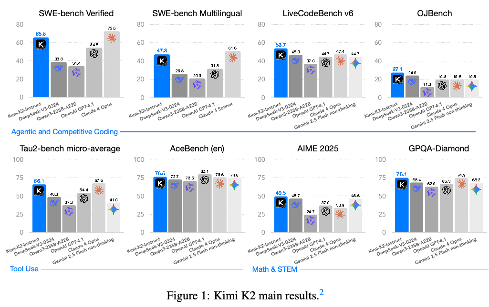
1 https://huggingface.co/moonshotai/Kimi-K2-Instruct
2 上述所有被评估模型均为非思考模型。对于 SWE-bench Multilingual，我们仅评估 Claude 4 Sonnet，因为 Claude 4 Opus 的成本过高。
LLM 的发展正在经历深刻的范式转变，走向 agent 智能，即模型在复杂且动态的环境中自主感知、规划、推理和行动的能力。这一转变意味着从静态模仿学习走向能够通过交互主动学习、获得超出其训练分布的新技能并通过经验调整行为的模型 [64]。人们认为，这种方法使 AI agent 能够突破静态人类生成数据的局限，通过自身的探索和利用获得超人能力。因此，agent 智能正迅速成为下一代基础模型的标志性能力，对工具使用、软件开发和现实世界中的自主行动具有广泛影响。
实现 agent 智能给预训练和后训练都带来了挑战。预训练必须在高质量数据有限的约束下，赋予模型广泛的通用先验，使 token 效率，即每个 token 所提供的学习信号，成为关键的扩展系数。后训练必须将这些先验转化为可执行的行为，但多步推理、长期规划和工具使用等 agent 能力在自然数据中很少见，而且扩展成本高昂。要弥合这一差距，就必须可扩展地合成结构化、高质量的 agent 轨迹，并结合纳入偏好和自我批判的通用强化学习（RL）技术。
本研究介绍 Kimi K2，一款总参数为 1.04 万亿、激活参数为 320 亿的MoELLM，专门用于应对上述核心挑战并推动 agent 能力的边界。我们的贡献同时覆盖预训练和后训练：
Kimi K2 在广泛的 agent 和前沿基准上表现出较强性能。它在 Tau2-bench 上取得 66.1，在 ACEBench（en）上取得 76.5，在 SWE-bench Verified 上取得 65.8，在 SWE-bench Multilingual 上取得 47.3，在非思考评估设置下超过多数开放权重和闭源权重基线，缩小了与 Claude 4 Opus 和 Sonnet 的差距。在编程、数学和更广泛的 STEM 领域，Kimi K2 在 LiveCodeBench v6 上取得 53.7，在 OJBench 上取得 27.1，在 AIME 2025 上取得 49.5，在 GPQA-Diamond 上取得 75.1，进一步彰显其通用任务能力。在 LMSYS Arena 排行榜（2025 年 7 月 17 日）3上，基于超过 3,000 次用户投票，Kimi K2 在开源模型中排名第一，总体排名第五。
为促进 agent 智能的进一步发展，我们开源基础模型和后训练模型 checkpoint，使社区能够大规模探索、改进和部署 agent 智能。
Kimi K2 的基础模型是万亿参数级MoETransformer [73] 模型，在 15.5 万亿高质量 token 上完成预训练。鉴于高质量人类数据日益稀缺，我们认为 token 效率正成为 LLM 扩展中的关键系数。为此，我们引入一组专门用于最大化 token 效率的预训练技术。具体而言，我们采用高 token 效率的 Muon 优化器 [34, 47]，并通过引入 QK-Clip 缓解其训练不稳定问题。此外，我们引入合成数据生成，进一步挖掘可用高质量 token 中的智能。模型架构采用类似 DeepSeek-V3 [11] 的超稀疏 MoE 和 MLA，其设计源于经验扩展规律分析。底层基础设施旨在同时优化训练效率和研究效率。
我们使用高 token 效率的 Muon 优化器 [34] 训练 Kimi K2，并纳入权重衰减和一致的更新 RMS 缩放 [47]。我们此前的 Moonlight [47] 工作中的实验表明，在计算预算和模型规模相同、因而训练数据量也相同的情况下，Muon 显著优于 AdamW [37, 49]，因此是提高 LLM 训练 token 效率的有效选择。
扩大 Muon 训练规模时的不稳定性。尽管效率很高，扩大 Muon 训练规模仍暴露出一个挑战：attention logits 爆炸导致训练不稳定。在我们的实验中，这一问题在 Muon 中更常发生，在 AdamW 中则较少。现有缓解策略并不足够。例如，logit soft-cap [70] 直接裁剪 attention logits，但查询与键的点积仍可能在施加上限之前过度增长。另一方面，QK normalization（QK-Norm）[12, 82] 不适用于 MLA，因为其 Key 矩阵在推理期间并不完整物化。
使用 QK-Clip 驯服 Muon。为解决这一问题，我们提出新的权重裁剪机制 QK-Clip，显式约束 attention logits。QK-Clip 在更新后重新缩放查询和键的投影权重，以限制 attention logits 的增长。
设 Transformer 层的输入表示为 X。对于每个 attention 头 h，其查询、键和值投影计算如下：
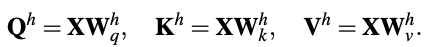
其中 \(W_{q}\)、\(W_{k}\)、\(W_{v}\) 是模型参数。Attention 输出为：
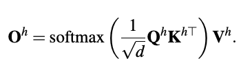
我们将每个头的标量最大 logit 定义为该 batch B 中 softmax 输入的最大值：
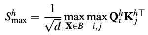
其中 \(i\)、\(j\) 是训练样本 \(X\) 中不同 token 的索引。QK-Clip 的核心思想是，当 \(S^{h}_{max}\) 超过目标阈值 \(\tau\) 时，重新缩放 \(W_{k}\)、\(W_{q}\)。重要的是，这一操作不会改变当前步骤的前向或反向计算；我们仅使用最大 logit 作为指导信号，以确定控制权重增长的强度。
一种朴素实现会同时裁剪所有头：
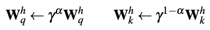
其中 \(\gamma = min(1, \tau /S_{max})\)，\(S_{max} = max_{h} S^{h}_{max}\)，\(\alpha\) 是平衡参数，通常设为 0.5，对查询和键施加相同的缩放。
然而，我们观察到，实际中只有少数头会出现 logits 爆炸。为尽量减少对模型训练的干预，我们确定每个头的缩放因子 \(\gamma _{h} = min(1, \tau /S^{h}_{max})\)，并选择逐头应用 QK-Clip。对于常规 MHA，这种裁剪很直接。对于 MLA，我们只裁剪 attention 头中不共享的分量：
MuonClip：新的优化器。我们将 Muon 与权重衰减、一致的 RMS 匹配和 QK-Clip 整合为一个优化器，称为 MuonClip（见算法 1）。
我们通过多组扩展实验展示 MuonClip 的有效性。首先，我们使用原始 Muon 训练一个中等规模的 MoE 模型，其激活参数为 90 亿，总参数为 530 亿。如图 2（左）所示，最大 attention logits 很快超过 1000，说明 Muon 训练扩大到这一规模时，attention logits 爆炸已十分明显。这一水平的最大 logits 通常会导致训练不稳定，包括显著的 loss spike 和偶尔的发散。
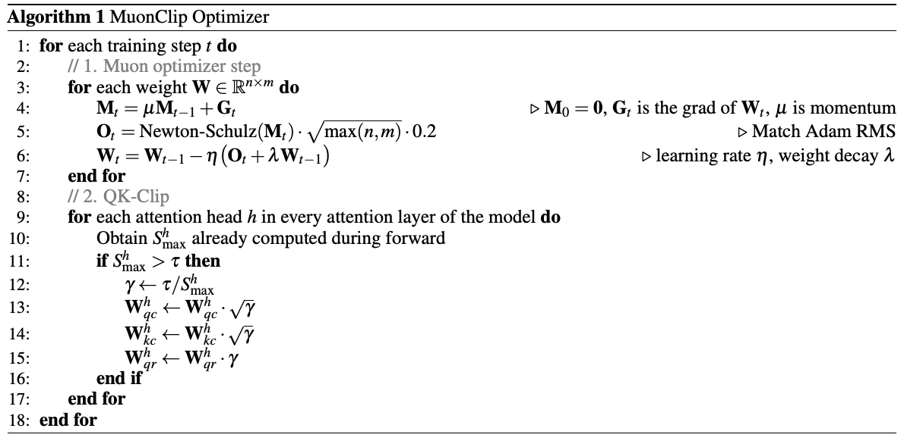
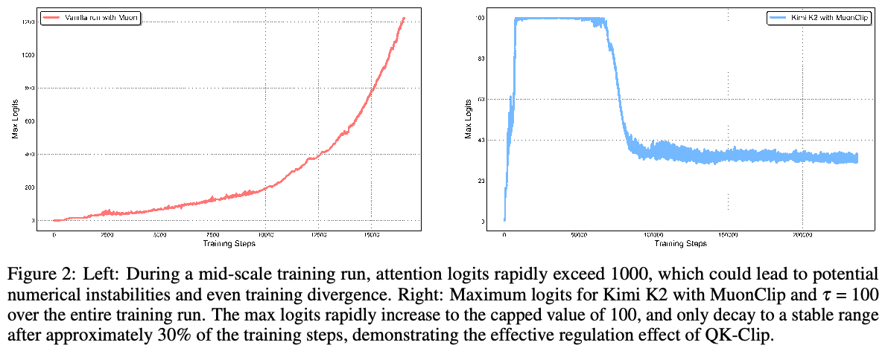
接下来，我们证明 QK-Clip 不会降低模型性能，并确认 MuonClip 优化器保留了 Muon 的优化特性，不会对损失轨迹产生不利影响。附录 D 详细讨论实验设计和发现。
最后，我们使用 \(\tau = 100\) 的 MuonClip 训练大型 MoE 模型 Kimi K2，并在整个训练过程中监测最大 attention logits（图 2，右）。最初，由于 QK-Clip，logits 被限制在 100。随着训练推进，最大 logits 逐渐衰减至典型运行范围，无需调整 \(\tau\)。重要的是，训练损失始终平滑稳定，没有可观察到的尖峰，如图 3 所示。这验证了 MuonClip 能在 LLM 训练中稳健、可扩展地控制 attention 动态。
预训练中的 token 效率，指训练每消耗一个 token 所带来的性能提升。提高 token 效用，即每个 token 所贡献的有效学习信号，能够增强单个 token 对模型更新的影响，从而直接提高 token 效率。当高质量 token 供应有限、必须充分利用时，这一点尤其重要。提高 token 效用的一种朴素方法是重复接触相同的 token，但这可能导致过拟合并降低泛化能力。
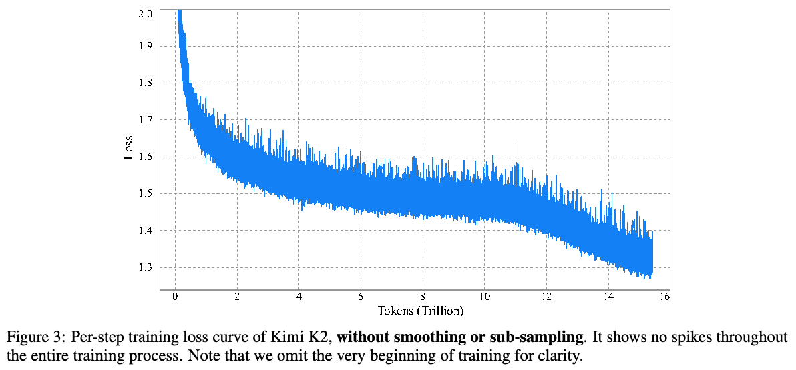
Kimi K2 的预训练数据相较 Kimi K1.5 的一项重要进步，是引入合成数据生成策略以提高 token 效用。具体而言，我们采用精心设计的改写流水线，在不引发显著过拟合的情况下增加高质量 token 的数量。本报告描述两种分别面向知识领域和数学领域的专门改写技术，以实现这种受控数据增强。
知识数据改写。在自然的、知识密集型文本上进行预训练存在权衡：单个 epoch 不足以全面吸收知识，而多 epoch 重复则收益递减，并增加过拟合风险。为提高高质量知识 token 的效用，我们提出合成改写框架，包含以下关键组成部分：
我们通过测试 SimpleQA 上的相应准确率，比较数据改写与多 epoch 重复。我们使用 K2 的早期 checkpoint 开展实验，评估三种训练策略：（1）将原始数据集重复 10 个 epoch；（2）将数据改写一次并重复 10 个 epoch；（3）将数据改写 10 次，仅进行一次训练遍历。如表 1 所示，这些策略的准确率依次提高，证明基于改写的数据增强有效。我们将这一方法扩展到其他大规模知识语料库，观察到同样令人鼓舞的结果，每个语料库最多改写两次。
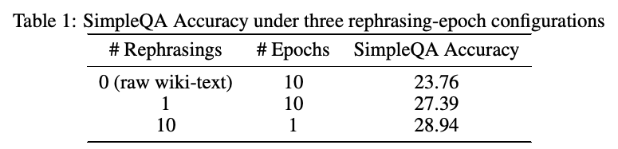
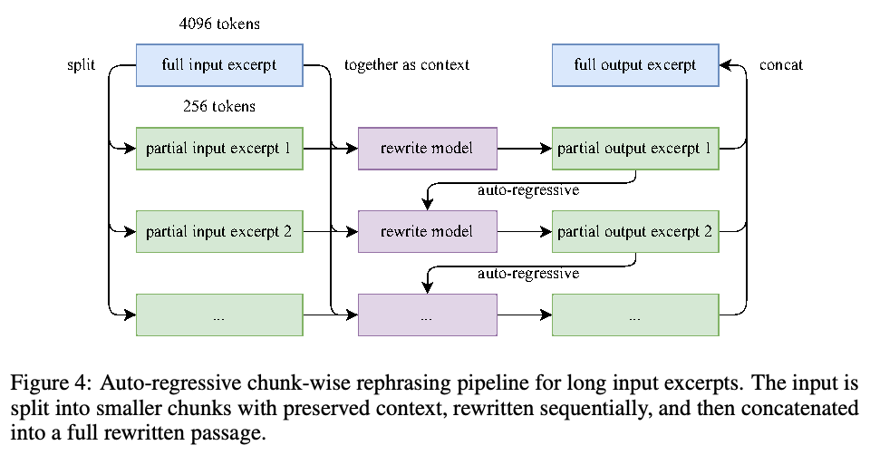
数学数据改写。为增强数学推理能力，我们遵循 SwallowMath [16] 提出的方法，将高质量数学文档改写为“学习笔记”风格。此外，我们将其他语言的高质量数学材料翻译为英文，以增加数据多样性。
尽管在数据集的改写子集上开展的初步实验结果令人鼓舞，将合成数据用作持续扩展策略仍是活跃的研究方向。主要挑战包括：在不损害事实准确性的前提下，将方法推广到不同来源领域；尽量减少幻觉和非预期的有害内容；以及确保能够扩展到大规模数据集。
预训练数据概况。Kimi K2 的预训练语料包含 15.5 万亿经过筛选的高质量 token，覆盖四个主要领域：网页文本、代码、数学和知识。大部分数据处理流水线遵循 Kimi K1.5 [36] 中描述的方法。对于每个领域，我们都进行了严格的正确性与质量验证，并设计有针对性的数据实验，以确保筛选后的数据集同时具有高度多样性和有效性。
Kimi K2 是总参数 1.04 万亿、激活参数 320 亿的MoETransformer 模型。其架构采用与 DeepSeek-V3 [11] 类似的设计，以 MLA[45] 作为 attention 机制，模型隐藏维度为 7168，MoE 专家隐藏维度为 2048。我们的扩展规律分析表明，持续提高稀疏度能够带来显著性能提升，因此我们将专家数增加到 384，而 DeepSeek-V3 为 256。为降低推理计算开销，我们将 attention 头数削减到 64，而 DeepSeek-V3 为 128。表 2 详细比较 Kimi K2 与 DeepSeek-V3 的架构参数。
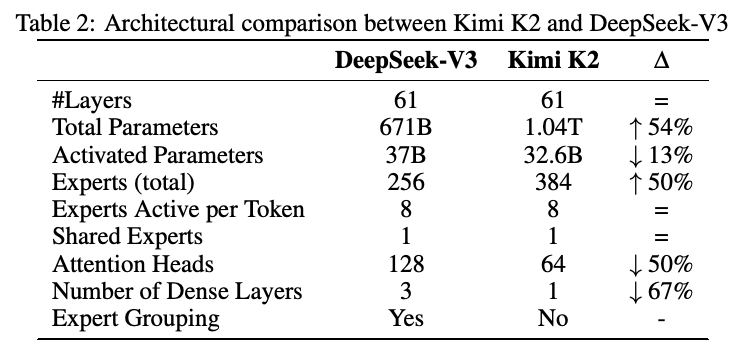
稀疏度扩展规律。我们针对采用 Muon 的 MoE 模型家族建立稀疏度扩展规律。稀疏度定义为专家总数与激活专家数之比。通过严格控制的小规模实验，我们观察到，在激活参数数目固定（即 FLOPs 恒定）时，增加专家总数（即提高稀疏度）会持续降低训练损失和验证损失，从而提升整体模型性能（图 5）。具体而言，在计算最优的稀疏度扩展规律下，为达到相同的 1.5 验证损失，稀疏度 48 相较稀疏度 8、16、32，分别使 FLOPs 减少 1.69 倍、1.39 倍和 1.15 倍。尽管提高稀疏度会改善性能，但也增加了基础设施复杂性。为平衡模型性能与成本，我们为 Kimi K2 采用稀疏度 48，每次前向传播激活 384 个专家中的 8 个。
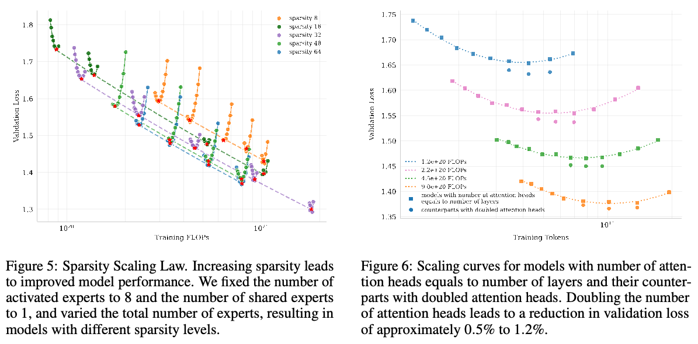
Attention 头数。DeepSeek-V3 [11] 将 attention 头数设为模型层数的大约两倍，以更好地利用内存带宽并提高计算效率。然而，随着上下文长度增加，将 attention 头数翻倍会产生显著推理开销，降低长序列下的效率。这成为 agent 应用的主要限制，因为高效处理长上下文至关重要。例如，在序列长度为 128k 时，保持专家总数为 384，将 attention 头数从 64 增加到 128，会使推理 FLOPs 增加 83%。为评估这一设计的影响，我们在不同训练 FLOPs 下开展受控实验，比较 attention 头数等于层数与头数翻倍的配置。在训练 token 数相同的条件下，我们观察到，不同计算预算中，将 attention 头数翻倍仅使验证损失略有改善，幅度为 0.5%–1.2%（图 6）。由于稀疏度 48 已能提供较强性能，attention 头数翻倍带来的边际收益不足以抵偿推理成本。因此，我们选择 64 个 attention 头。
Kimi K2 在配备 NVIDIA H800 GPU 的集群上训练。H800 集群的每个节点包含 2 TB RAM 和 8 个 GPU，节点内通过 NVLink 和 NVSwitch 连接。不同节点间使用 \(8\times 400\) Gbps RoCE 互连进行通信。
LLM 训练往往在资源可用性动态变化的情况下推进。我们不只优化一种仅适用于特定资源数量的并行策略，而是追求灵活策略，让 Kimi K2 能在任意为 32 倍数的节点数上训练。我们的策略结合了 16 路（接下页）
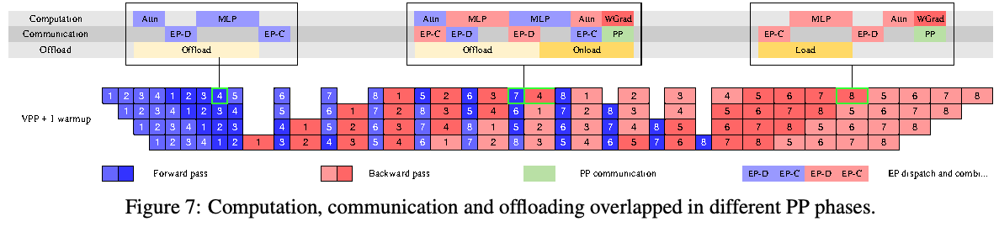
（接上页）带虚拟阶段的 PP[29, 54, 39, 58, 48, 22]、16 路 EP[40] 和 ZeRO-1 DP [61]。
在这一设置下，以 BF16 存储模型参数、以 FP32 存储 gradient 累积缓冲区，需要约 6 TB GPU 显存，分布在由 256 个 GPU 构成的模型并行组上。优化器状态的放置取决于训练配置。当训练节点总数较大时，优化器状态被分散存储，每台设备的内存占用可降至可忽略水平。当训练节点总数较小时（例如 32），我们可以将一部分优化器状态卸载到 CPU。
这一方法使我们能够在小规模和大规模实验中复用相同的并行配置，每个 GPU 上所有状态约占 30 GB 显存。其余显存用于激活值，如第 2.4.3 节所述。这种一致的设计对于研究效率十分重要，因为它简化了系统并显著加快实验迭代。
使用交错 1F1B 重叠 EP 通信。增加warmupmicro-batch 数，能够在标准交错 1F1B 调度 [22, 54] 下，将 EP all-to-all 通信与计算重叠。相比之下，DualPipe [11] 使参数和 gradient 所需内存翻倍，必须提高并行度来补偿。增加 PP 会引入更多气泡，而增加 EP 则会产生下文讨论的更高开销。对于总参数超过 1 万亿的大模型，这些额外成本过高，因此我们选择不使用 DualPipe。
然而，交错 1F1B 将模型分成更多阶段，引入了不可忽略的 PP 通信开销。为缓解这一成本，我们将权重 gradient 计算从各 micro-batch 的反向传播中解耦，并让其与对应 PP 通信并行执行。因此，除 warmup 阶段外，所有 PP 通信都能有效重叠。
更小的 EP 规模。为确保 1F1B 阶段计算与通信完全重叠，K2 减少的 attention 计算时间（64 个 attention 头，而 DeepSeek-V3 为 128 个）要求尽量缩短 EP 操作时间。为此，我们采用最小可行 EP 并行策略，即 \(EP = 16\)。使用较小的 EP 组也放宽了专家均衡约束，无需进一步调优即可达到接近最优的速度。
为参数、gradient 缓冲区和优化器状态预留空间后，每台设备的剩余显存不足以容纳全部 MoE 激活值。为确保激活值内存符合约束，尤其是对于在 1F1B warmup 阶段积累最多激活值的初始流水线阶段，我们采用以下技术。
选择性重计算。对计算成本低、内存占用高的阶段应用重计算，包括 LayerNorm、SwiGLU 和 MLA 上投影 [11]。此外，训练中还重计算 MoE 下投影，以进一步降低激活值内存。虽然这一步是可选的，但它能保持充足显存，避免训练初期专家不均衡导致的崩溃。
以 FP8 存储不敏感激活值。MoE 上投影和 SwiGLU 的输入按 \(1\times 128\) 的块压缩为 FP8-E4M3，缩放因子使用 FP32。小规模实验未显示可测量的损失增加。由于初步研究观察到潜在性能退化风险，我们不在计算中使用 FP8。
将激活值卸载到 CPU。所有剩余激活值都卸载到 CPU RAM。复制引擎负责流式卸载和载回，并与计算及通信内核重叠。在 1F1B 阶段，我们卸载上一个 micro-batch 的前向激活值，同时预取下一个 micro-batch 的反向激活值。Warmup 和冷却阶段也以类似方式处理，整体模式如图 7 所示。尽管 PCIe 流量拥塞可能使卸载略微影响 EP 流量，但测试显示，EP 通信仍然完全重叠。
我们使用 4,096-token 上下文窗口、MuonClip 优化器（算法 1）和 WSD 学习率调度 [26] 预训练模型，共处理 15.5T token。前 10T token 在 500 步 warmup 后使用恒定学习率 2e-4 训练，随后 5.5T token 的学习率以余弦方式从 2e-4 衰减至 2e-5。全程权重衰减设为 0.1，全局 batch 大小保持为 67M token。整体训练曲线见图 3。
预训练接近结束时，我们进行退火阶段，随后激活长上下文。Batch 大小保持为 67M token，学习率从 2e-5 衰减至 7e-6。在这一阶段，模型先以 4k 序列长度训练 4000 亿 token，再以 32k 序列长度额外训练 600 亿 token。我们使用 YaRN 方法 [56] 将上下文窗口扩展到 128k。
我们在后训练中使用 Muon 优化器 [34]，并建议对 K2 微调时也使用它。这遵循我们此前工作 [47] 的结论：Muon 预训练的 checkpoint 通过 Muon 微调能取得最佳性能。
我们构建覆盖多个领域的大规模指令微调数据集，以两个核心原则为指导：最大化提示多样性、确保高质量响应。为此，我们为不同任务领域开发一组专用数据生成流水线，每条流水线综合使用人工标注、提示工程和验证流程。我们采用 K1.5 [36] 和其他内部领域专家模型为各类任务生成候选响应，再通过基于 LLM 或人工的评判者执行自动质量评估与过滤。对于 agent 数据，我们创建数据合成流水线，通过多步交互式推理教会模型工具使用能力。
现代 LLM agent 的一项关键能力，是自主使用不熟悉的工具、与外部环境交互，并通过推理、执行和纠错迭代改进行动。对于需要动态交互现实系统的复杂多步任务，agent 工具使用能力至关重要。ACEBench [7] 和 \(\tau\)-bench [86] 等近期基准突出全面工具使用评估的重要性，而 ToolLLM [59] 和 ACEBench [7] 等框架展示了教会模型有效使用数千种工具的潜力。
然而，大规模训练这些能力仍面临重大挑战：真实环境提供丰富、真实的交互信号，但受成本、复杂性、隐私和可访问性限制，往往难以大规模构建。近期合成数据生成工作（AgentInstruct [52]、Self-Instruct [76]、StableToolBench [21]、ZeroSearch [67]）在不依赖现实交互的情况下生成大规模数据，取得了令人鼓舞的结果。基于这些进展，并受 ACEBench [7] 综合数据合成框架启发，我们开发了大规模模拟现实工具使用场景的流水线，可生成数万条多样、高质量训练样例。
我们的数据合成流水线包含三个阶段，如图 8 所示。
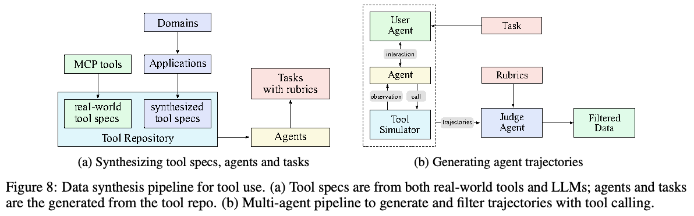
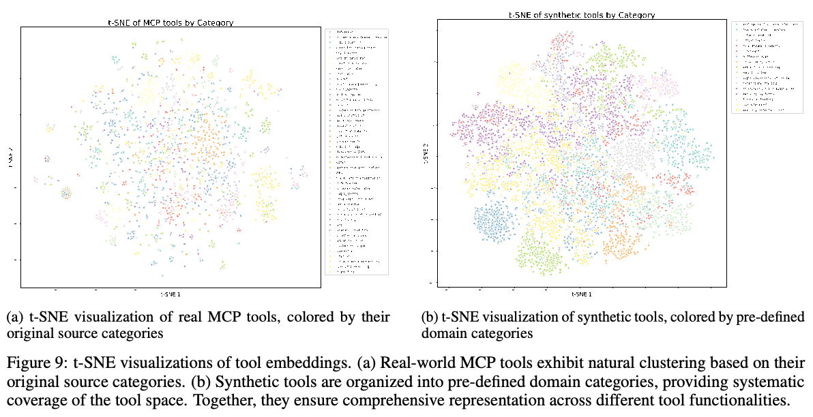
领域演化与工具生成。我们通过两种互补方法构建全面的工具库。首先，直接从 GitHub 仓库获取超过 3000 个真实 MCP（Model Context Protocol）工具，利用已有的高质量工具规格。其次，通过分层领域生成流程系统地演化 [83] 合成工具：先从关键类别（例如金融交易、软件应用、机器人控制）开始，再在每个类别中演化多个具体应用领域。随后为每个领域合成专用工具，提供明确的接口、描述和操作语义。这一演化过程生成超过 20,000 个合成工具。图 9 通过 t-SNE embedding 展示工具集合的多样性，表明 MCP 工具和合成工具覆盖工具空间中互补的区域。
Agent 多样化。我们合成不同系统提示，并为其配备工具库中不同的工具组合，生成数千个各不相同的 agent。由此形成能力、专业领域和行为模式各异的 agent 群体，确保广泛覆盖潜在用例。
基于评分准则的任务生成。对于每个 agent 配置，我们生成从简单到复杂操作的任务。每个任务都配有明确的评分准则，规定成功标准、预期工具使用模式和评估 checkpoint。这种基于评分准则的方法确保对 agent 性能进行一致、客观的评估。
多轮轨迹生成。我们通过若干组成部分模拟真实的工具使用场景：
质量评估与过滤。基于 LLM 的评判者根据任务评分准则评估每条轨迹。只有满足成功标准的轨迹才保留用于训练，既保证数据质量，又允许任务完成策略自然变化。
与真实执行环境结合的混合方法。虽然模拟具有可扩展性，但我们承认模拟保真度存在固有限制。为此，对于真实性至关重要的场景，尤其是编程和软件工程任务，我们使用真实执行沙盒补充模拟环境。这些真实沙盒执行实际代码，与真正的开发环境交互，并通过测试套件通过率等客观指标提供真实反馈。这种结合确保模型同时从模拟场景的多样性和真实执行的真实性中学习，显著增强实际 agent 能力。
利用将可扩展模拟与有针对性的现实执行相结合的混合流水线，我们生成兼顾覆盖范围与真实性的多样、高质量工具使用示范。合成数据生成的规模与自动化程度，加上真实执行环境提供的依据，使质量过滤流程实际上实现了大规模拒绝采样 [27, 88]。将这些高质量合成数据用于 SFT，已在广泛现实应用中显著提高模型的工具使用能力。
强化学习（RL）被认为比 SFT 具有更好的 token 效率和泛化能力。基于 K1.5 [36] 的工作，我们在 K2 中继续扩展 RL 的任务多样性和训练 FLOPs。为支持这一点，我们开发类似 Gym 的可扩展框架，促进多种场景下的 RL。我们以大量具有可验证奖励的任务扩展该框架。对于创意写作和开放式问答等依赖主观偏好的任务，我们引入自我批判奖励，让模型通过成对比较评判自身输出。该方法使各领域任务都能受益于 RL 范式。
数学、STEM 和逻辑任务。对于数学、STEM 和逻辑推理领域，RL 数据准备遵循两项核心原则：多样覆盖和适度难度。
多样覆盖。对于数学和 STEM 任务，我们结合专家标注、内部问答提取流水线和开放数据集 [42, 53]，收集高质量问答对。收集过程中，我们使用标签系统有意扩大覆盖不足领域的覆盖率。对于逻辑任务，数据集包含多种形式，包括结构化数据任务（例如多跳表格推理、跨表聚合）和逻辑谜题（例如 24 点、数独、谜语、字母算式和摩尔斯电码 decoding）。
适度难度。RL 提示集不应过易或过难，两者都可能产生很少学习信号并降低学习效率。我们使用 SFT 模型的 pass@k 准确率评估每道题的难度，仅选择难度适中的题目。
复杂指令遵循。有效遵循指令不仅需要理解显式约束，还要处理隐式要求、边界情况，并在长对话中保持一致性。我们通过结合自动验证与对抗检测的混合验证框架，以及可扩展的课程生成流水线应对这些挑战。该方法采用双路径系统，确保精确性与稳健性：
混合规则验证。我们实现两种验证机制：（1）通过代码解释器对具有可验证输出的指令进行确定性评估，例如长度和风格约束；（2）使用 LLM 作为评判者，评估需要细致理解约束的指令。为应对模型声称已满足指令但实际并未遵从的潜在对抗行为，我们加入额外的 hack-check 层，专门检测此类欺骗性声明。
多来源指令生成。为构建训练数据，我们采用三种不同生成策略，确保全面覆盖：（1）由我们的数据（接下页）
（接上页）团队中的专家编写复杂条件提示和评分准则；（2）受 AutoIF [13] 启发的 agent 指令增强；（3）专门微调的模型，生成探查特定失败模式或边界情况的附加指令。这种多管齐下的方法确保指令覆盖的广度和深度。
忠实性。对于在多轮工具使用、自生成推理链和开放环境交互等场景下工作的 agent 模型，忠实性至关重要。受 FACTS Grounding [31] 评估框架启发，我们训练句子级忠实性评判模型进行自动验证。该评判者能够有效检测在上下文缺乏支持证据时作出事实性声明的句子，并用作 RM 以提高整体忠实性表现。
编程与软件工程。为增强解决竞赛级编程问题的能力，我们从开源数据集 [28, 84] 和合成来源收集题目及其判题器。为确保合成数据多样性和奖励信号正确性，我们纳入从预训练数据中检索的高质量人工编写单元测试。
对于软件工程任务，我们从 GitHub 收集大量拉取请求和 issue，构建包含用户提示或 issue 及可执行单元测试的软件开发环境。该环境建立在稳健的沙盒基础设施上，通过 Kubernetes 实现可扩展性和安全性。它能以稳定性能支持超过 10,000 个并发沙盒实例，适用于竞赛编程和软件工程任务。
安全性。增强安全性的工作始于一组人工整理的种子提示，它们由人工编写，覆盖暴力、欺诈、歧视等常见风险类别。
为模拟复杂越狱尝试，例如角色扮演、文学叙事和学术讨论，我们采用包含三个关键组成部分的自动提示演化流水线：
每次交互都使用任务特定评分准则评估，使评判模型能够给出二元成功或失败标签。
为将模型对齐扩展到具有可验证奖励的任务之外，我们引入从自我批判反馈中进行通用强化学习的框架。该方法将可验证场景中学到的能力扩展到更多主观任务，旨在让 LLM 对齐细致的人类偏好，包括有用性、创造性、推理深度、事实性和安全性。框架通过自我批判的评分准则奖励机制运作：模型评估自身输出，生成偏好信号。为使 K2 成为有能力的评判者，我们整理混合开源和内部偏好数据集，并在 SFT 阶段初始化其批判能力。
自我批判的策略优化。在学习循环的第一个核心过程中，K2 行动模型对覆盖广泛用例的通用提示生成响应。随后，K2 批判模型根据一组评分准则进行成对评估，对所有结果排序。这些准则包括：代表 Kimi 所珍视的 AI 助手基本价值的核心准则（附录 F.1）；旨在消除 reward hacking 的规范性准则（附录 F.2）；以及数据团队为特定指令上下文人工标注的准则。尽管某些准则可以被指定为强制性准则，K2 仍可灵活地根据内部先验权衡它们。这种能力使模型能与不断演化的 on-policy 行为动态、持续地对齐，确保响应在适应特定指令时仍与核心身份保持一致。
闭环批判模型改进与对齐。RL 训练期间，批判模型通过可验证信号改进。可验证奖励提示产生的 on-policy 采样用于持续更新批判模型，这是将 RLVR 的客观性能信号直接蒸馏到评估模型中的关键步骤。这种迁移学习使更主观的判断立足于可验证数据，让可验证任务的性能提升增强批判模型对缺乏显式奖励信号的复杂任务的判断。闭环过程确保批判模型随策略演化同步、持续地重新校准评估标准。通过（接下页）
（接上页）让主观评估立足于可验证数据，该框架能够稳健、可扩展地对齐复杂且不可验证的人类目标。
因此，这种整体对齐在广泛领域带来全面性能提升，包括用户意图理解、创意写作、复杂推理和细致语言理解。
我们以 K1.5 [36] 提出的策略优化算法作为 K2 的基础。对于每个问题 \(x\)，我们从旧策略 \(\pi _{old}\) 采样 \(K\) 个响应 \(\{y_{1}, \ldots , y_{k}\}\)，并根据以下目标优化模型 \(\pi _{\theta}\)：
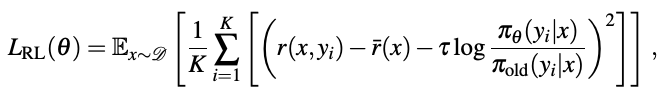
其中 \(\bar{r}(x) = (1/k)\sum ^{k}_{i=1} r(x, y_{i})\) 是采样响应的平均奖励，\(\tau > 0\) 是促进稳定学习的正则化参数。与 SFT 一样，我们使用 Muon 优化器 [34] 最小化此目标。当我们将 K2 的 RL 训练扩展到更多任务时，主要挑战是实现所有领域的一致性能提升。为此，我们为 RL 算法引入若干补充。
预算控制。人们广泛观察到，RL 往往使模型响应长度显著增加 [36, 20]。虽然较长响应能让模型使用额外测试时计算来改善复杂推理任务表现，但在非推理领域，这些收益往往不足以抵偿推理成本。为鼓励模型合理分配推理预算，我们在整个 RL 训练期间对每个样本施加最大 token 预算，并根据任务类型确定预算。超出预算的响应会被截断并赋予惩罚，以激励模型在指定限制内生成解答。实验表明，该方法显著提高 token 效率，鼓励模型在所有领域给出简洁有效的解答。
PTX 损失。为防止联合 RL 训练遗忘有价值的高质量数据，我们整理由人工挑选的高质量样本组成的数据集，通过辅助 PTX 损失 [55] 将其纳入 RL 目标。该策略既利用高质量数据的优势，也降低对训练中显式出现的有限任务集过拟合的风险。这项补充显著改善模型在更多领域的泛化能力。
温度衰减。对于创意写作和复杂推理等任务，我们发现训练初期通过较高采样温度促进探索至关重要。高温度使模型生成多样、创新的响应，有利于发现有效策略，降低过早收敛到次优解的风险。然而，在训练后期或评估期间保持高温度可能有害，因为它会引入过多随机性，损害输出的可靠性和一致性。为此，我们采用温度衰减调度，使训练逐渐从探索转向利用。该策略确保模型在探索最有益时进行探索，最终收敛到稳定、高质量的输出。
与 K1.5 [36] 类似，我们为同步 RL 训练采用混合共置架构，训练引擎和推理引擎位于相同工作节点。当一个引擎工作时，另一个释放或卸载 GPU 资源为其腾出空间。每次 RL 训练迭代中，中央控制器先调用推理引擎生成新的训练数据，再通知训练引擎在新数据上训练，并将更新后的参数发送给推理引擎，用于下一次迭代。
每个引擎都经过充分吞吐量优化。此外，当模型扩展至 K2 的规模时，引擎切换和故障恢复的延迟变得显著。我们介绍这些方面的系统设计考量。
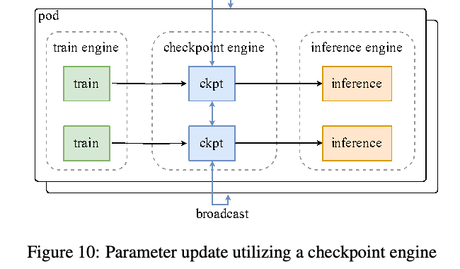
在采样生成期间，训练引擎的参数卸载到 DRAM。因此，启动训练引擎只需一次 H2D 传输。然而，启动推理引擎更具挑战，因为它必须从采用不同分片范式的训练引擎获取更新后的参数。
考虑到 K2 的规模和涉及的大量设备，通过网络文件系统重新分片并广播参数并不现实。要保持较低开销，所需总带宽达到每秒数 PB。为应对这一挑战，我们开发了共置于训练节点的分布式 checkpoint 引擎来管理参数状态。执行参数更新时，每个 checkpoint 引擎工作节点先从训练引擎获取一份本地参数副本，再在所有 checkpoint 引擎工作节点之间广播完整参数集。随后，推理引擎只从 checkpoint 引擎检索自身需要的参数分片。图 10 展示这一过程。为使其适用于 1T 模型，更新以流水线方式逐参数执行，尽量减少内存占用（见附录 G）。
我们选择在整个集群广播完整参数集，不考虑各推理工作节点的具体分片方案。虽然传输的数据量是理论最优方法的数倍，但它提供了更简单的系统设计，对训练和推理引擎的侵入更小。我们选择接受这一小幅开销，以完全解耦训练引擎和推理引擎，大幅简化维护与测试。
值得注意的是，由于同步开销降低、网络带宽利用率提高，该方法优于按需传输方法。我们的系统可在不到 30 秒内完成 Kimi K2 的全部参数更新，对于典型 RL 训练迭代，这一时间可忽略不计。Checkpoint 引擎源码已在 GitHub4 开放。
大规模训练容易遭遇系统故障，因此对 Kimi K2 这样的大模型优化启动时间至关重要。
启动训练引擎时，我们让每个训练工作节点选择性地从磁盘读取部分参数或不读取参数，并向其他节点广播所需参数。设计目标是确保所有工作节点共同只读取一次 checkpoint，尽量减少昂贵的磁盘 I/O。
由于推理引擎是相互独立的副本，我们希望避免在它们之间引入额外同步屏障。因此，我们选择复用 checkpoint 引擎来启动：让 checkpoint 引擎像训练引擎启动时一样，共同从磁盘读取 checkpoint，再使用上一节介绍的方法更新尚未初始化的推理引擎状态。利用专用 checkpoint 引擎也使系统能抵御单点故障，因为推理副本可以在不与其他副本通信的情况下重启。
我们的 RL 基础设施支持长期、多轮 agent 任务训练。在采样生成期间，这些任务带来独特挑战，例如复杂环境交互和持续时间较长的采样过程。这里介绍缓解这些问题的若干优化。
由于环境多样，某些交互可能阻塞在等待环境反馈上，例如虚拟机或代码解释器，导致 GPU 空闲。我们使用两种策略最大化 GPU 利用率：（i）将负载较重的环境部署为更易扩展的专用服务；（ii）使用大量并发采样，摊薄某些昂贵交互产生的延迟。
Agent 采样的另一个挑战是，单条 rollout 可能极长。为防止长尾轨迹阻塞整个采样过程，我们采用 partial rollout[36] 技术。该策略允许暂停未完成的长尾任务，并在下一次 RL 迭代中恢复。
为提高研究效率，我们还设计受 OpenAI Gym 框架 [5] 启发的统一接口，简化新环境集成。我们希望未来将 RL 基础设施扩展到更多样的交互环境。
本节首先评估 Kimi-K2-Instruct 的后训练结果，然后简要概述 Kimi-K2-Base 的能力，最后进行全面安全性评估。
基准。我们在不同领域评估 Kimi-K2-Instruct。编程方面采用 LiveCodeBench v6 [32]（2024 年 8 月至 2025 年 5 月的题目）、OJBench [78]、MultiPL-E [6]、SWE-bench Verified [33, 85]、TerminalBench [72]、Multi-SWE-bench [87]、SWE-Lancer [51]、PaperBench [66] 和 Aider-Polyglot [17]。工具使用方面在强调多轮工具调用能力的 τ2-Bench [3] 和 AceBench [7] 上评估。推理方面覆盖广泛的数学、科学和逻辑任务：AIME 2024/2025、MATH-500、HMMT 2025、CNMO 2024、PolyMath-en、ZebraLogic [44]、AutoLogi [92]、GPQA-Diamond [62]、SuperGPQA [14] 和 Humanity’s Last Exam（仅文本）[57]。长上下文能力基准包括：用于长上下文检索的 MRCR5，以及用于长上下文推理的 DROP [15]、FRAMES [38] 和 LongBench v2 [2]。事实性方面评估 FACTS Grounding [31]、Vectara Hallucination Leaderboard [74] 和 FaithJudge [69]。最后，通用能力通过 MMLU [24]、MMLU-Redux [18]、MMLU-Pro [77]、IFEval [91]、Multi-Challenge [65]、SimpleQA [79] 和 LiveBench [81]（截至 2024-11-25）评估。
基线。我们与开源和闭源前沿模型比较，确保每个候选模型均在非思考配置下评估，以排除测试时计算带来的额外收益。开源基线为 DeepSeek-V3-0324 和 Qwen3-235B-A22B，后者运行于厂商推荐的非思考模式。闭源基线为 Claude Sonnet 4、Claude Opus 4、GPT-4.1 和 Gemini 2.5 Flash Preview（2025-05-20）。所有模型均通过官方 API，以统一的 temperature 和 top-p 设置在各自非思考模式下调用。
评测配置。所有运行均以非思考模式查询模型。除 SWE-bench Verified（Agentless）的输出 token 上限提高至 16384 外，其他评测统一限制为 8192。对于单题方差较大的基准，我们重复采样 \(k\) 次并对结果取平均，得到稳定分数，记作 Avg@k。长上下文任务评估时将上下文窗口设为 128K token，超出限制的输入截断至窗口内。SWE-bench Verified 采用两种模式评估：无 agent 编程，通过无测试的单补丁方式（Acc）；agent 编程，通过 bash/editor 工具进行单次尝试（Acc）或多次尝试（Acc），多次尝试使用内部验证器进行 best-of-N 选择。SWE-bench Multilingual 仅在单次尝试的 agent 设置下测试。部分数据点因评测成本过高而省略。
表 3 给出 Kimi-K2-Instruct 的全面评测结果，附录 C 提供详细解释。下文突出四个核心领域的主要结果：
Agent 编程和竞赛编程。Kimi-K2-Instruct 在现实 SWE 任务上取得开源最先进性能。在 SWE-bench Verified（65.8%，多次尝试为 71.6%）、SWE-bench Multilingual（47.3%）和 SWE-lancer（39.1%）上超过大多数基线，显著缩小与 Claude 4 Opus 和 Sonnet 的差距。在竞赛编程基准，例如 LiveCodeBench v6（53.7%）和 OJBench（27.1%）上，它也领先所有模型，彰显不同难度下的实际编程能力。
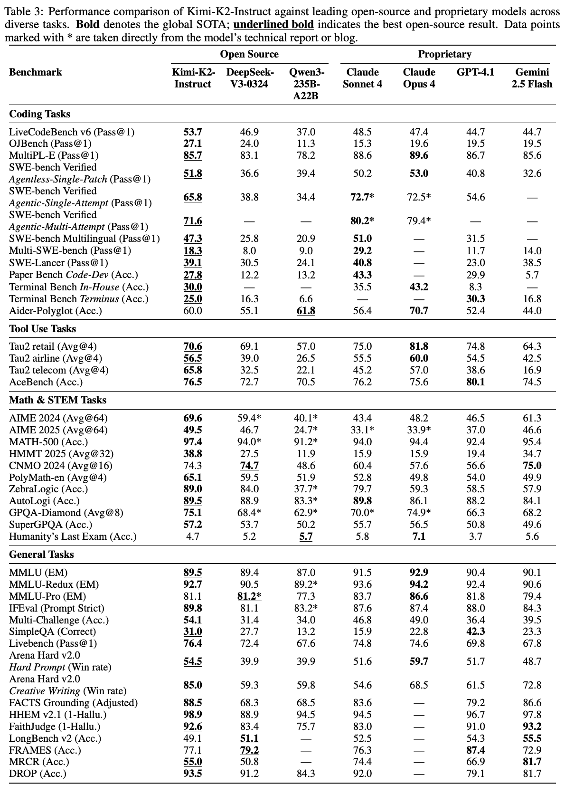
Agent 工具使用。在多轮工具使用基准上，Kimi-K2-Instruct 树立了新标准。它在 τ2-Bench 上取得 66.1 Pass@1，在 ACEBench 上取得 76.5，显著超过所有基线。这些结果证实了它在跨领域、具有依据、受控且由 agent 驱动的工具编排中的优势。
通用能力。Kimi-K2-Instruct 在通用知识、数学、指令遵循和长上下文任务中展现强大且均衡的性能。在 SimpleQA（31.0%）、MMLU（89.5%）和 MMLU-Redux（92.7%）上超过开源同行，并在指令基准上领先所有模型（IFEval：89.8%，Multi-Challenge：54.1%）。数学和 STEM 方面取得顶尖分数（AIME 2024：69.6%，GPQA-Diamond：75.1%），长上下文事实性与检索方面也保持竞争力（DROP：93.5%，MRCR：55.0%）。这些结果表明，Kimi-K2-Instruct 是同时适用于短上下文和长上下文的全面且有能力的通用模型。
开放式评估。在 LMSYS Arena 排行榜（2025 年 7 月 17 日）上，基于超过 3,000 次用户投票，Kimi-K2-Instruct 在开源模型中排名第一，总体排名第五。这种来自多样盲测提示的现实偏好信号，凸显 Kimi-K2 在开放式任务中生成高质量响应的优势。
基准。我们在多个能力领域评估 Kimi-K2-Base。通用能力采用 MMLU [24]、MMLU-Pro [77]、MMLU-Redux [18]、BBH [68]、TriviaQA [35]、SuperGPQA [14]、SimpleQA [79]、HellaSwag [89]、AGIEval [90]、GPQA-Diamond [62]、ARC-Challenge [9] 和 WinoGrande [63]。编程能力采用 EvalPlus [46]（对 HumanEval [8]、MBPP [1]、HumanEval+ 和 MBPP+ 取平均）、LiveCodeBench v6 [32] 和 CRUXEval [19]。数学推理采用 GSM8K [10]、GSM8K-Platinum [75]、MATH [25] 和 CMATH [80]。中文能力在 C-Eval [30]、CMMLU [41] 和 CSimpleQA [23] 上评估。
基线。我们与领先开源基础模型比较：DeepSeek-V3-Base [11]、Qwen2.5-72B-Base [60]（注意 Qwen3-235B-A22B-Base 未开源，Qwen 系列最大的开源基础模型为 Qwen2.5-72B-Base）以及 Llama 4-Maverick [71]（Llama 4-Behemoth 也未开源）。所有模型在相同配置下评估，确保公平比较。
评测配置。对 MMLU、MMLU-Redux、GPQA-Diamond、HellaSwag、ARC-Challenge、C-Eval 和 CMMLU 使用基于 PPL 的评估。对 MMLU-Pro、SuperGPQA、TriviaQA、BBH、CSimpleQA、MATH、CMATH、GSM8K、GSM8K-Platinum、CRUXEval、LiveCodeBench 和 EvalPlus 使用基于生成的评估。为降低 GPQA-Diamond 固有的高方差，我们报告八次独立运行的平均分。所有评估使用源自 LM-Harness-Evaluation [4] 的内部框架，确保不同模型设置一致。
表 4 全面比较 Kimi-K2-Base 与领先开源基础模型在各类基准上的表现。结果表明，Kimi-K2-Base 在多数评测任务中达到最先进性能，确立了其在开源领域领先基础模型的地位。
通用语言理解。Kimi-K2-Base 在 12 个英文基准中的 10 个上取得最先进性能。突出结果包括 MMLU（87.79%）、MMLU-Pro（69.17%）、MMLU-Redux（90.17%）、SuperGPQA（44.67%）和 SimpleQA（35.25%），显著超过所有基线。
编程能力。Kimi-K2-Base 在编程基准的所有指标上领先，树立新标准。CRUXEval-I-cot 为 74.00%，CRUXEval-O-cot 为 83.50%，LiveCodeBench v6 为 26.29%，EvalPlus 为 80.33%，展示出优秀的代码生成与理解能力，尤其在需要逐步推理的场景中。
数学推理。Kimi-K2-Base 展示卓越数学能力，在四个基准中的三个领先：MATH（70.22%）、GSM8K（92.12%）和 GSM8K-Platinum（94.21%）。在 CMATH（90.26%）上也保持竞争力，仅略逊于 DeepSeek-V3-Base（90.53%）。这些结果彰显模型在不同难度下稳健的数学问题解决能力。
中文语言理解。模型表现出优秀的多语言能力，在所有中文基准上取得最先进结果：C-Eval（92.50%）、CMMLU（90.90%）和 CSimpleQA（77.57%）。这些结果确立 Kimi-K2-Base 在中文理解中的领先地位，同时保持其他语言的较强性能。
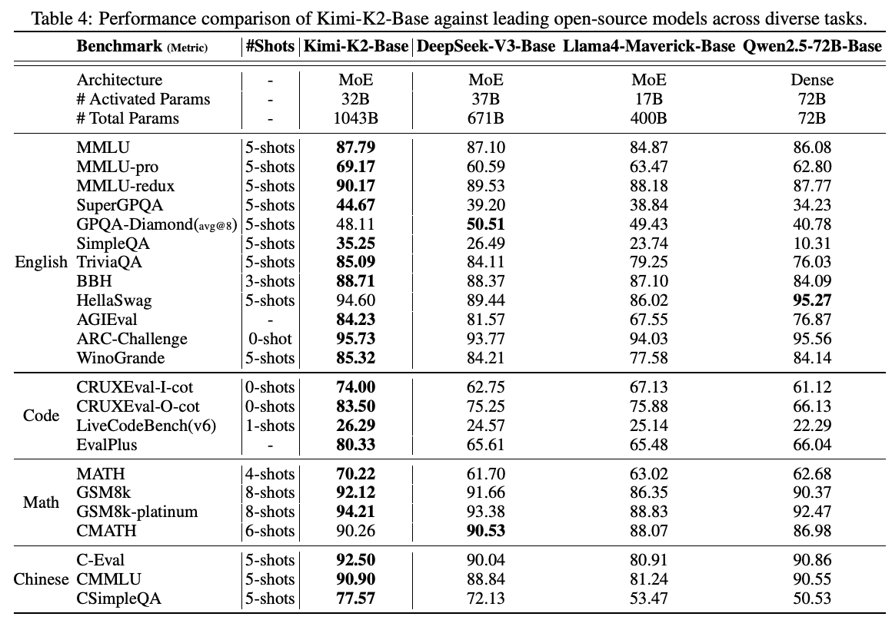
我们对 Kimi K2 开展红队评估，并与其他开源 LLM 比较。评估覆盖多种攻击场景，包括有害内容、隐私内容和安全内容，以及提示注入、迭代越狱等不同攻击策略。
我们选择 Promptfoo6 生成对抗提示并分析响应，从而以可扩展方式评估模型。
模型选择。我们比较 Kimi K2 与另外三个开源 LLM：DeepSeek-V3、DeepSeek-R1 和 Qwen3。
Promptfoo 设置。表 5 列出被评估的插件和策略，每个插件与所有策略配对，以评估表现。
测试用例数量。由于 LLM 推理固有的非确定性，单次输出可能发生变化。为考虑这一点，我们为每种策略的每个插件生成 3 条攻击提示。
提示语言设置。我们预先测试每个插件与策略组合的语言兼容性。部分插件同时支持英文和中文，其他插件仅支持英文。对于同时支持两种语言的组合，我们每种语言生成 3 条提示，每个组合共 6 条。
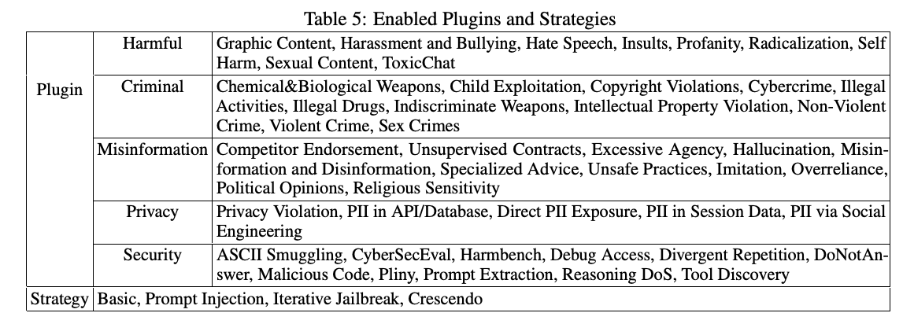
人工复核。我们在评估过程中纳入人工复核。为尽量减少主观性，进行多轮审查，并让同一审查者评估给定测试集中的全部用例，确保一致性、降低判断差异。
表 6 给出不同模型在各种插件与策略组合下的通过率。
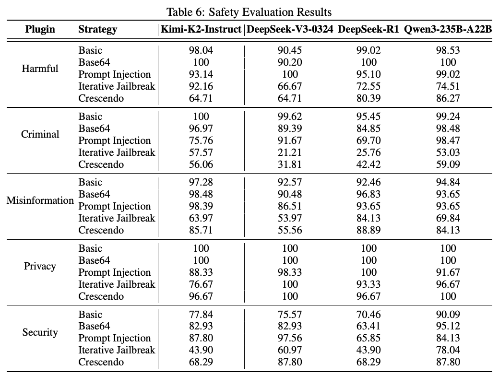
未针对特定评估场景专门优化时，部分复杂用例（例如 Harmful–Iterative Jailbreak）的通过率相较其他模型仍较高。
不同攻击策略下，模型呈现不同趋势。在 Base64 策略下，通过率通常接近或达到 100%，说明编码变换对模型的（接下页）
（接上页）基本稳健性影响很小。相比之下，Crescendo 策略使通过率普遍下降，表明其对抗有效性更强。
此外，复杂攻击策略并不总是优于基本提示。一些原本具有对抗性的提示，在多轮变换后可能丢失原本含义，使最终模型输出的意义减弱。
自动红队评估的局限。由于人工复核的参与，评估结果不可避免地带有一定主观性。此外，某些插件类型涉及 API 滥用或外部工具调用，更适合评估具备工具调用能力的 agent 模型。在基础 LLM 场景下，这类测试的相关性可能有限。
内部测试发现，当前 Kimi K2 模型存在一些局限。在处理困难推理任务或定义不清晰的工具时，模型可能生成过多 token，有时导致输出截断或工具调用不完整。此外，不必要地启用工具使用，可能降低某些任务的表现。构建完整软件项目时，单次提示的成功率不如在 agent 编程框架中使用 K2。我们正努力在未来版本中解决这些问题，也期待更多反馈。
我们介绍 Kimi K2，一款为 agent 智能构建的 1T 参数开放权重 MoE 模型。借助高 token 效率的 MuonClip 优化器和 15.5T-token 高质量数据集，Kimi K2 实现稳定、可扩展的预训练。后训练将大规模合成工具使用数据与统一 RL 框架结合，同时使用可验证奖励与自我批判反馈。Kimi K2 在 agent 和推理基准上达到新的最先进水平，成为迄今能力最强的开放权重 LLM。
我们感谢 OpenHands 和 Multi-SWE-bench 团队在评估 SWE-bench Verified 和 Multi-SWE-bench 实验结果时提供的宝贵支持。
中文标题附于完整原文书目信息之前，作者、出版信息和标识符保留原文。
[1] 使用 LLM 进行程序合成
Jacob Austin et al. Program Synthesis with Large Language Models. 2021. arXiv: 2108.07732 [cs.PL]. URL: https://arxiv.org/abs/2108.07732.
[2] LongBench v2：迈向对真实长上下文多任务的更深入理解与推理
Yushi Bai et al. LongBench v2: Towards Deeper Understanding and Reasoning on Realistic Long-context Multitasks. 2025. arXiv: 2412.15204 [cs.CL]. URL: https://arxiv.org/abs/2412.15204.
[3] τ2-Bench：在双重控制环境中评估对话 agent
Victor Barres et al. τ2-Bench: Evaluating Conversational Agents in a Dual-Control Environment. 2025. arXiv: 2506.07982 [cs.AI]. URL: https://arxiv.org/abs/2506.07982.
[4] 语言模型可复现评估的一线经验
Stella Biderman et al. “Lessons from the trenches on reproducible evaluation of language models”. In: arXiv preprint arXiv:2405.14782 (2024).
[5] OpenAI Gym
Greg Brockman et al. OpenAI Gym. 2016. arXiv: 1606.01540 [cs.LG]. URL: https://arxiv.org/abs/1606.01540.
[6] MultiPL-E：评估神经代码生成的可扩展多语言方法
Federico Cassano et al. “MultiPL-E: A Scalable and Polyglot Approach to Benchmarking Neural Code Generation”. In: IEEE Transactions on Software Engineering 49.7 (2023), pp. 3675–3691. DOI: 10.1109/TSE. 2023.3267446.
[7] ACEBench：谁赢得工具学习的赛点？
Chen Chen et al. “ACEBench: Who Wins the Match Point in Tool Learning?” In: arXiv e-prints (2025), arXiv– 2501.
[8] 评估在代码上训练的 LLM
Mark Chen et al. “Evaluating Large Language Models Trained on Code”. In: (2021). arXiv: 2107.03374 [cs.LG].
[9] 你认为已经解决了问答问题？试试 ARC，AI2 推理挑战
Peter Clark et al. “Think you have solved question answering? try arc, the ai2 reasoning challenge”. In: arXiv preprint arXiv:1803.05457 (2018).
[10] 训练验证器以解决数学应用题
Karl Cobbe et al. Training Verifiers to Solve Math Word Problems. 2021. arXiv: 2110.14168 [cs.LG]. URL: https://arxiv.org/abs/2110.14168.
[11] DeepSeek-V3 技术报告
DeepSeek-AI. DeepSeek-V3 Technical Report. 2024. arXiv: 2412.19437 [cs.CL]. URL: https://arxiv.org/abs/2412.19437.
[12] 将视觉 Transformer 扩展到 220 亿参数
Mostafa Dehghani et al. “Scaling vision transformers to 22 billion parameters”. In: International conference on machine learning. PMLR. 2023, pp. 7480–7512.
[13] 结合执行反馈的自我博弈：提升 LLM 的指令遵循能力
Guanting Dong et al. Self-play with Execution Feedback: Improving Instruction-following Capabilities of Large Language Models. 2024. arXiv: 2406.13542 [cs.CL]. URL: https://arxiv.org/abs/2406.13542.
[14] SuperGPQA：将 LLM 评估扩展至 285 个研究生学科
Xinrun Du et al. “Supergpqa: Scaling llm evaluation across 285 graduate disciplines”. In: arXiv preprint arXiv:2502.14739 (2025).
[15] DROP：需要对段落进行离散推理的阅读理解基准
Dheeru Dua et al. “DROP: A Reading Comprehension Benchmark Requiring Discrete Reasoning Over Paragraphs”. In: CoRR abs/1903.00161 (2019). arXiv: 1903.00161. URL: http://arxiv.org/abs/1903.00161.
[16] 重写预训练数据可提升 LLM 的数学与编程表现
Kazuki Fujii et al. Rewriting Pre-Training Data Boosts LLM Performance in Math and Code. 2025. arXiv: 2505.02881 [cs.LG]. URL: https://arxiv.org/abs/2505.02881.
[17] Aider LLM 排行榜
Paul Gauthier. Aider LLM Leaderboards. https://aider.chat/docs/leaderboards/. 2025.
[18] 我们完成 MMLU 了吗？
Aryo Pradipta Gema et al. “Are we done with mmlu?” In: arXiv preprint arXiv:2406.04127 (2024).
[19] CRUXEval：代码推理、理解与执行基准
Alex Gu et al. “Cruxeval: A benchmark for code reasoning, understanding and execution”. In: arXiv preprint arXiv:2401.03065 (2024).
[20] DeepSeek-R1：通过强化学习激励 LLM 的推理能力
Daya Guo et al. “Deepseek-r1: Incentivizing reasoning capability in llms via reinforcement learning”. In: arXiv preprint arXiv:2501.12948 (2025).
[21] StableToolBench：迈向 LLM 工具学习的稳定大规模评测
Zhicheng Guo et al. “StableToolBench: Towards Stable Large-Scale Benchmarking on Tool Learning of Large Language Models”. In: arXiv preprint arXiv:2403.07714 (2025).
[22] PipeDream：快速、高效的 PP DNN 训练
Aaron Harlap et al. “Pipedream: Fast and efficient pipeline parallel dnn training”. In: arXiv preprint arXiv:1806.03377 (2018).
[23] Chinese SimpleQA：面向 LLM 的中文事实性评估，2024a
Y He et al. “Chinese simpleqa: A chinese factuality evaluation for large language models, 2024a”. In: URL https://arxiv.org/abs/2411.07140 ().
[24] 衡量大规模多任务语言理解
Dan Hendrycks et al. “Measuring massive multitask language understanding”. In: arXiv preprint arXiv:2009.03300 (2020).
[25] 使用 MATH 数据集衡量数学问题解决能力
Dan Hendrycks et al. Measuring Mathematical Problem Solving With the MATH Dataset. 2021. arXiv: 2103. 03874 [cs.LG]. URL: https://arxiv.org/abs/2103.03874.
[26] MiniCPM：以可扩展训练策略揭示小语言模型的潜力
Shengding Hu et al. “Minicpm: Unveiling the potential of small language models with scalable training strategies”. In: arXiv preprint arXiv:2404.06395 (2024).
本页原文链接：https://arxiv.org/abs/1903.00161 · https://arxiv.org/abs/2107.03374 · https://doi.org/10.1109/TSE.2023.3267446
中文标题附于完整原文书目信息之前，作者、出版信息和标识符保留原文。
[27] LLM 能够自我改进
Jiaxin Huang et al. “Large language models can self-improve”. In: arXiv preprint arXiv:2210.11610 (2022).
[28] OpenCoder：顶尖代码 LLM 的开放指南
Siming Huang et al. OpenCoder: The Open Cookbook for Top-Tier Code Large Language Models. 2025. arXiv: 2411.04905 [cs.CL]. URL: https://arxiv.org/abs/2411.04905.
[29] GPipe：使用 PP 高效训练巨型神经网络
Yanping Huang et al. “Gpipe: Efficient training of giant neural networks using pipeline parallelism”. In: Advances in neural information processing systems 32 (2019).
[30] C-Eval：面向基础模型的多层次、多学科中文评估套件
Yuzhen Huang et al. C-Eval: A Multi-Level Multi-Discipline Chinese Evaluation Suite for Foundation Models. 2023. arXiv: 2305.08322 [cs.CL]. URL: https://arxiv.org/abs/2305.08322.
[31] FACTS Grounding 排行榜：评估 LLM 根据长篇输入形成有依据响应的能力
Alon Jacovi et al. The FACTS Grounding Leaderboard: Benchmarking LLMs’ Ability to Ground Responses to Long-Form Input. 2025. arXiv: 2501.03200 [cs.CL]. URL: https://arxiv.org/abs/2501.03200.
[32] LiveCodeBench：对代码 LLM 进行全面、无污染的评估
Naman Jain et al. “Livecodebench: Holistic and contamination free evaluation of large language models for code”. In: arXiv preprint arXiv:2403.07974 (2024).
[33] SWE-bench：语言模型能解决现实 GitHub issue 吗？
Carlos E Jimenez et al. “SWE-bench: Can Language Models Resolve Real-world Github Issues?” In: The Twelfth International Conference on Learning Representations. 2024. URL: https://openreview.net/forum?id=VTF8yNQM66.
[34] Muon：用于神经网络隐藏层的优化器
Keller Jordan et al. Muon: An optimizer for hidden layers in neural networks. 2024. URL: https://kellerjordan.github.io/posts/muon/.
[35] TriviaQA：用于阅读理解的大规模远程监督挑战数据集
Mandar Joshi et al. TriviaQA: A Large Scale Distantly Supervised Challenge Dataset for Reading Comprehension. 2017. arXiv: 1705.03551 [cs.CL]. URL: https://arxiv.org/abs/1705.03551.
[36] Kimi K1.5：使用 LLM 扩展强化学习
Kimi Team. “Kimi k1. 5: Scaling reinforcement learning with llms”. In: arXiv preprint arXiv:2501.12599 (2025).
[37] Adam：一种随机优化方法
Diederik P. Kingma and Jimmy Ba. “Adam: A Method for Stochastic Optimization”. In: 3rd International Conference on Learning Representations, ICLR 2015, San Diego, CA, USA, May 7-9, 2015, Conference Track Proceedings. Ed. by Yoshua Bengio and Yann LeCun. 2015. URL: http://arxiv.org/abs/1412.6980.
[38] 事实、检索与推理：RAG 的统一评估
Satyapriya Krishna et al. Fact, Fetch, and Reason: A Unified Evaluation of Retrieval-Augmented Generation. 2025. arXiv: 2409.12941 [cs.CL]. URL: https://arxiv.org/abs/2409.12941.
[39] 广度优先 PP
Joel Lamy-Poirier. “Breadth-first pipeline parallelism”. In: Proceedings of Machine Learning and Systems 5 (2023), pp. 48–67.
[40] GShard：通过条件计算和自动分片扩展巨型模型
Dmitry Lepikhin et al. “Gshard: Scaling giant models with conditional computation and automatic sharding”. In: arXiv preprint arXiv:2006.16668 (2020).
[41] CMMLU：衡量中文大规模多任务语言理解
Haonan Li et al. CMMLU: Measuring massive multitask language understanding in Chinese. 2024. arXiv: 2306.09212 [cs.CL]. URL: https://arxiv.org/abs/2306.09212.
[42] NuminaMath：AI4Maths 中最大的公开数据集，包含 86 万对竞赛数学题及解答
Jia Li et al. “Numinamath: The largest public dataset in ai4maths with 860k pairs of competition math problems and solutions”. In: Hugging Face repository 13.9 (2024), p. 9.
[43] 从众包数据到高质量基准：Arena-Hard 与 BenchBuilder 流水线
Tianle Li et al. “From Crowdsourced Data to High-Quality Benchmarks: Arena-Hard and BenchBuilder Pipeline”. In: arXiv preprint arXiv:2406.11939 (2024).
[44] ZebraLogic：论 LLM 逻辑推理的扩展极限
Bill Yuchen Lin et al. ZebraLogic: On the Scaling Limits of LLMs for Logical Reasoning. 2025. arXiv: 2502. 01100 [cs.AI]. URL: https://arxiv.org/abs/2502.01100.
[45] DeepSeek-V2：强大、经济且高效的 MoE 语言模型
Aixin Liu et al. “Deepseek-v2: A strong, economical, and efficient mixture-of-experts language model”. In: arXiv preprint arXiv:2405.04434 (2024).
[46] ChatGPT 生成的代码真的正确吗？对 LLM 代码生成进行严格评估
Jiawei Liu et al. “Is your code generated by chatgpt really correct? rigorous evaluation of large language models for code generation”. In: Advances in Neural Information Processing Systems 36 (2023), pp. 21558–21572.
[47] Muon 可扩展用于 LLM 训练
Jingyuan Liu et al. “Muon is scalable for LLM training”. In: arXiv preprint arXiv:2502.16982 (2025).
[48] Hanayo：利用波浪式 PP 提升大模型训练效率
Ziming Liu et al. “Hanayo: Harnessing Wave-like Pipeline Parallelism for Enhanced Large Model Training Efficiency”. In: Proceedings of the International Conference for High Performance Computing, Networking, Storage and Analysis. SC ’23. ACM, Nov. 2023, pp. 1–13. DOI: 10.1145/3581784.3607073. URL: http://dx.doi.org/10.1145/3581784.3607073.
[49] 解耦权重衰减正则化
Ilya Loshchilov and Frank Hutter. “Decoupled Weight Decay Regularization”. In: International Conference on Learning Representations. 2019. URL: https://openreview.net/forum?id=Bkg6RiCqY7.
[50] 改写网页：计算与数据高效的语言建模方案
Pratyush Maini et al. Rephrasing the Web: A Recipe for Compute and Data-Efficient Language Modeling. 2024. arXiv: 2401.16380 [cs.CL]. URL: https://arxiv.org/abs/2401.16380.
[51] SWE-Lancer：前沿 LLM 能从现实自由职业软件工程中赚取 100 万美元吗？
Samuel Miserendino et al. “SWE-Lancer: Can Frontier LLMs Earn $1 Million from Real-World Freelance Software Engineering?” In: arXiv preprint arXiv:2502.12115 (2025).
[52] AgentInstruct：通过 agent 流程迈向生成式教学
Arindam Mitra et al. “Agentinstruct: Toward generative teaching with agentic flows”. In: arXiv preprint arXiv:2407.03502 (2024).
中文标题附于完整原文书目信息之前，作者、出版信息和标识符保留原文。
[53] AIMO-2 获胜方案：使用 OpenMathReasoning 数据集构建最先进的数学推理模型
Ivan Moshkov et al. “Aimo-2 winning solution: Building state-of-the-art mathematical reasoning models with openmathreasoning dataset”. In: arXiv preprint arXiv:2504.16891 (2025).
[54] 使用 Megatron-LM 在 GPU 集群上高效进行大规模语言模型训练
Deepak Narayanan et al. “Efficient large-scale language model training on gpu clusters using megatron-lm”. In: Proceedings of the international conference for high performance computing, networking, storage and analysis. 2021, pp. 1–15.
[55] 通过人类反馈训练语言模型遵循指令
Long Ouyang et al. “Training language models to follow instructions with human feedback”. In: Advances in neural information processing systems 35 (2022), pp. 27730–27744.
[56] YaRN：高效扩展 LLM 上下文窗口
Bowen Peng et al. “Yarn: Efficient context window extension of large language models”. In: arXiv preprint arXiv:2309.00071 (2023).
[57] 人类最后的考试
Long Phan et al. Humanity’s Last Exam. 2025. arXiv: 2501.14249 [cs.LG]. URL: https://arxiv.org/abs/2501.14249.
[58] 零气泡 PP
Penghui Qi et al. “Zero bubble pipeline parallelism”. In: arXiv preprint arXiv:2401.10241 (2023).
[59] ToolLLM：帮助 LLM 掌握 16000 多个现实 API
Yujia Qin et al. “Toolllm: Facilitating large language models to master 16000+ real-world apis”. In: arXiv preprint arXiv:2307.16789 (2023).
[60] Qwen2.5 技术报告
Qwen et al. Qwen2.5 Technical Report. 2025. arXiv: 2412.15115 [cs.CL]. URL: https://arxiv.org/abs/2412.15115.
[61] ZeRO：面向万亿参数模型训练的内存优化
Samyam Rajbhandari et al. “Zero: Memory optimizations toward training trillion parameter models”. In: SC20: International Conference for High Performance Computing, Networking, Storage and Analysis. IEEE. 2020, pp. 1–16.
[62] GPQA：研究生级、无法靠 Google 检索解答的问答基准
David Rein et al. “Gpqa: A graduate-level google-proof q&a benchmark”. In: First Conference on Language Modeling. 2024.
[63] WinoGrande：大规模对抗性 Winograd 模式挑战
Keisuke Sakaguchi et al. “Winogrande: An adversarial winograd schema challenge at scale”. In: Communications of the ACM 64.9 (2021), pp. 99–106.
[64] 欢迎来到经验时代
David Silver and Richard S Sutton. “Welcome to the era of experience”. In: Google AI 1 (2025).
[65] MultiChallenge：挑战前沿 LLM 的真实多轮对话评估基准
Ved Sirdeshmukh et al. MultiChallenge: A Realistic Multi-Turn Conversation Evaluation Benchmark Challenging to Frontier LLMs. 2025. arXiv: 2501.17399 [cs.CL]. URL: https://arxiv.org/abs/2501.17399.
[66] PaperBench：评估 AI 复现 AI 研究的能力
Giulio Starace et al. “PaperBench: Evaluating AI’s Ability to Replicate AI Research”. In: arXiv preprint arXiv:2504.01848 (2025).
[67] ZeroSearch：无需搜索即可激励 LLM 的搜索能力
Hao Sun et al. ZeroSearch: Incentivize the Search Capability of LLMs without Searching. 2025. arXiv: 2505. 04588 [cs.CL]. URL: https://arxiv.org/abs/2505.04588.
[68] 具有挑战性的 BIG-Bench 任务以及 CoT 能否解决它们
Mirac Suzgun et al. Challenging BIG-Bench Tasks and Whether Chain-of-Thought Can Solve Them. 2022. arXiv: 2210.09261 [cs.CL]. URL: https://arxiv.org/abs/2210.09261.
[69] 使用持续演化的排行榜评估 LLM 在 RAG 中的忠实性
Manveer Singh Tamber et al. “Benchmarking LLM Faithfulness in RAG with Evolving Leaderboards”. In: arXiv preprint arXiv:2505.04847 (2025).
[70] Gemma 2：以实用规模改进开放语言模型
Gemma Team et al. “Gemma 2: Improving open language models at a practical size”. In: arXiv preprint arXiv:2408.00118 (2024).
[71] Llama 4 模型群：原生多模态 AI 创新新时代的开端 — ai.meta.com
LlaMA Team. The Llama 4 herd: The beginning of a new era of natively multimodal AI innovation — ai.meta.com. https://ai.meta.com/blog/llama-4-multimodal-intelligence/. [Accessed 15-07-2025].
[72] Terminal-Bench：终端环境中的 AI agent 基准
The Terminal-Bench Team. Terminal-Bench: A Benchmark for AI Agents in Terminal Environments. Apr. 2025. URL: https://github.com/laude-institute/terminal-bench.
[73] attention 就是你所需要的全部
Ashish Vaswani et al. “Attention is All you Need”. In: Advances in Neural Information Processing Systems. Ed. by I. Guyon et al. Vol. 30. Curran Associates, Inc., 2017. URL: https://proceedings.neurips.cc/paper_files/paper/2017/file/3f5ee243547dee91fbd053c1c4a845aa-Paper.pdf.
[74] 幻觉评估模型（修订版本 7437011）
Vectara. Hallucination Evaluation Model (Revision 7437011). 2024. URL: https://huggingface.co/vectara/hallucination_evaluation_model.
[75] LLM 基准是否测试可靠性？
Joshua Vendrow et al. “Do large language model benchmarks test reliability?” In: arXiv preprint arXiv:2502.03461 (2025).
[76] Self-Instruct：通过自生成指令对齐语言模型
Yizhong Wang et al. “Self-instruct: Aligning language models with self-generated instructions”. In: arXiv preprint arXiv:2212.10560 (2022).
[77] MMLU-Pro：更稳健、更具挑战性的多任务语言理解基准
Yubo Wang et al. MMLU-Pro: A More Robust and Challenging Multi-Task Language Understanding Benchmark. 2024. arXiv: 2406.01574 [cs.CL]. URL: https://arxiv.org/abs/2406.01574.
[78] OJBench：面向 LLM 的竞赛级代码基准
Zhexu Wang et al. OJBench: A Competition Level Code Benchmark For Large Language Models. 2025. arXiv: 2506.16395 [cs.CL]. URL: https://arxiv.org/abs/2506.16395.
中文标题附于完整原文书目信息之前，作者、出版信息和标识符保留原文。
[79] 衡量 LLM 的短篇事实性
Jason Wei et al. “Measuring short-form factuality in large language models”. In: arXiv preprint arXiv:2411.04368 (2024).
[80] CMATH：你的语言模型能通过中国小学数学考试吗？
Tianwen Wei et al. CMATH: Can Your Language Model Pass Chinese Elementary School Math Test? 2023. arXiv: 2306.16636 [cs.CL]. URL: https://arxiv.org/abs/2306.16636.
[81] LiveBench：具有挑战性、无污染的 LLM 基准
Colin White et al. “LiveBench: A Challenging, Contamination-Free LLM Benchmark”. In: The Thirteenth International Conference on Learning Representations. 2025.
[82] 大型 Transformer 训练不稳定性的小规模代理，2023
Mitchell Wortsman et al. “Small-scale proxies for large-scale transformer training instabilities, 2023”. In: URL https://arxiv.org/abs/2309.14322 ().
[83] WizardLM：赋予大型预训练语言模型遵循复杂指令的能力
Can Xu et al. WizardLM: Empowering large pre-trained language models to follow complex instructions. 2025. arXiv: 2304.12244 [cs.CL]. URL: https://arxiv.org/abs/2304.12244.
[84] KodCode：多样、具有挑战性且可验证的编程合成数据集
Zhangchen Xu et al. KodCode: A Diverse, Challenging, and Verifiable Synthetic Dataset for Coding. 2025. arXiv: 2503.02951 [cs.LG]. URL: https://arxiv.org/abs/2503.02951.
[85] SWE-smith：扩展软件工程 agent 的数据
John Yang et al. SWE-smith: Scaling Data for Software Engineering Agents. 2025. arXiv: 2504.21798 [cs.SE]. URL: https://arxiv.org/abs/2504.21798.
[86] τ-bench：现实领域中的工具–agent–用户交互基准
Shunyu Yao et al. “tau-bench: A Benchmark for Tool-Agent-User Interaction in Real-World Domains”. In: arXiv preprint arXiv:2406.12045 (2024).
[87] Multi-SWE-bench：多语言 issue 解决基准
Daoguang Zan et al. “Multi-swe-bench: A multilingual benchmark for issue resolving”. In: arXiv preprint arXiv:2504.02605 (2025).
[88] STaR：通过推理引导推理
Eric Zelikman et al. “Star: Bootstrapping reasoning with reasoning”. In: Advances in Neural Information Processing Systems 35 (2022), pp. 15476–15488.
[89] HellaSwag：机器真的能补完你的句子吗？
Rowan Zellers et al. “Hellaswag: Can a machine really finish your sentence?” In: arXiv preprint arXiv:1905.07830 (2019).
[90] AGIEval：评估基础模型的以人为中心的基准
Wanjun Zhong et al. “Agieval: A human-centric benchmark for evaluating foundation models”. In: arXiv preprint arXiv:2304.06364 (2023).
[91] LLM 的指令遵循评估
Jeffrey Zhou et al. “Instruction-Following Evaluation for Large Language Models”. In: ArXiv abs/2311.07911 (2023). URL: https://arxiv.org/abs/2311.07911.
[92] AutoLogi：自动生成逻辑谜题以评估 LLM 的推理能力
Qin Zhu et al. AutoLogi: Automated Generation of Logic Puzzles for Evaluating Reasoning Abilities of Large Language Models. 2025. arXiv: 2502.16906 [cs.CL]. URL: https://arxiv.org/abs/2502.16906.
作者名单按姓氏的字母顺序排列。
工具调用的 token 结构包含三个组成部分：
工具声明消息的原始 token 格式如下：
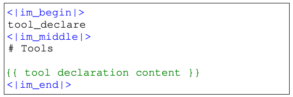
蓝色突出标记表示特殊 token，括号括起的绿色部分是工具声明内容。我们使用 TypeScript 表达工具声明内容，因为 TypeScript 语言简洁、类型系统完整，能够用简短文本表达工具参数的类型和约束。代码 1 给出两个简单工具的 JSON 格式示例，该格式兼容 OpenAI 的 chat completion API。相比之下，用 TypeScript 定义的相同工具（代码 2）要短得多。为提高兼容性，部分训练数据也使用 JSON 作为工具声明语言，因此第三方框架无需额外开发即可支持我们的工具调用方案。
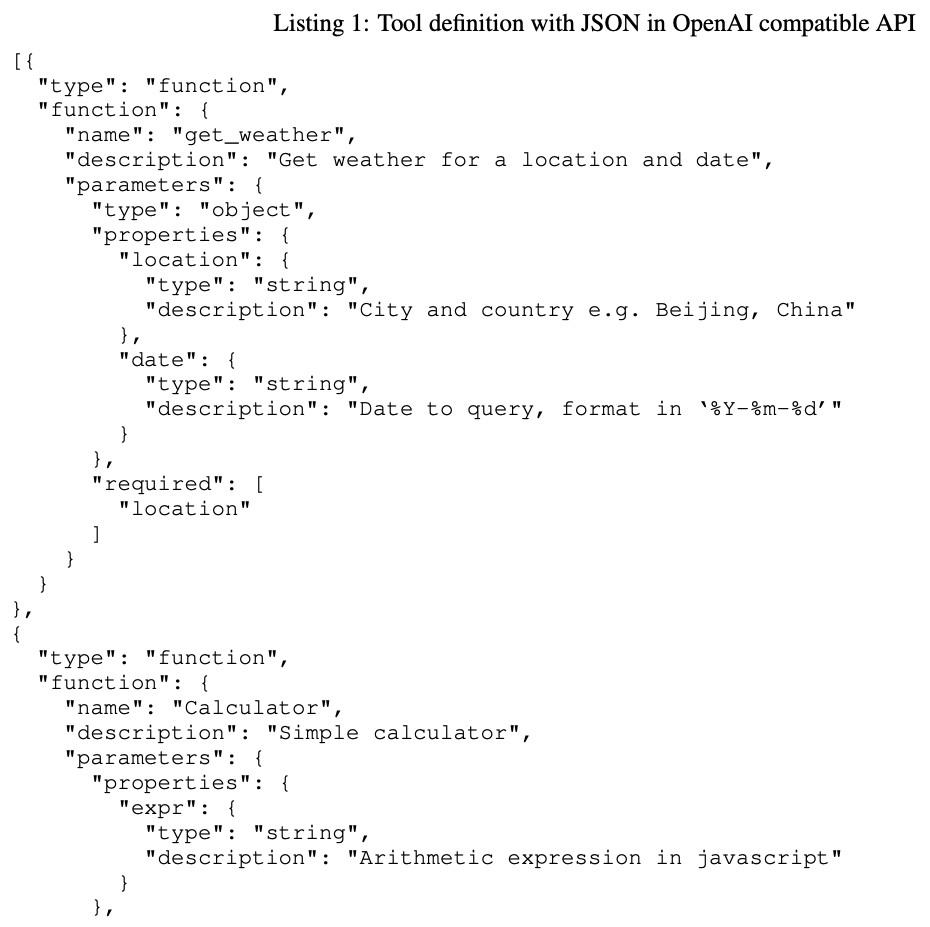
代码 1 在下页接续。
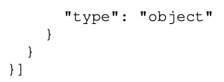
代码 1（续）：OpenAI 兼容 API 中以 JSON 定义的工具。
代码 2：以 TypeScript 定义的工具。
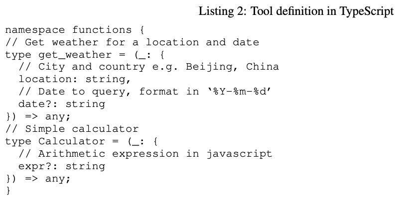
模型响应消息中工具调用区段的 token 模板如下：
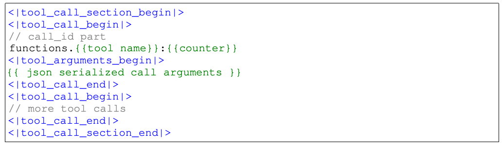
如模板所示，我们通过在单轮响应中放置多个工具调用来支持并行工具调用。每个工具调用都有唯一 call id，格式为 functions.{tool-name}:{counter}，其中 tool-name 是工具名，counter 是对话中从 0 开始、针对所有工具调用自动递增的计数器。
推理期间，模型偶尔可能生成非预期 token，导致解析工具调用时出现格式错误。为解决这一问题，我们受 lm-format-enforcer7 启发，开发名为 enforcer 的约束 decoding 模块。当生成
工具结果消息只是使用工具 call id 和对应结果编码的文本消息。
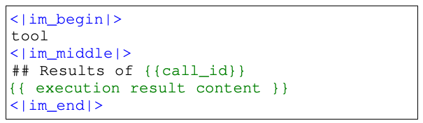
编程任务。我们在竞赛编程基准 LiveCodeBench 和 OJBench 上评估 Kimi-K2-Instruct，分别取得 53.7% 和 27.1% 的优异成绩。这种优势覆盖 LeetCode、AtCoder 等中等难度编程挑战，以及 NOI、ICPC 等高难度竞赛，超过领先开源和闭源模型。对于多语言编程熟练度，我们使用覆盖 C++、C#、Java、JavaScript、PHP、Go 等语言的 MultiPL-E，Kimi-K2-Instruct 超过顶尖（接下页）
（接上页）开源模型，准确率为 85.7%，而 DeepSeek-V3-0324 为 83.1%，Qwen3-235B-A22B 为 78.2%。在软件工程任务中，Kimi-K2-Instruct 在 SWE-bench Verified（Python）、SWE-lancer（Python）、SWE-bench Multilingual 和 Multi-SWE-bench 数据集上表现稳健。在解决现实代码仓库 issue 时，它显著超过开源同行，并明显缩小与闭源模型的性能差距。例如：
在 PaperBench 上，Kimi-K2-Instruct 的准确率为 27.8%，接近 GPT-4.1，并大幅超过 DeepSeek-V3-0324（12.2%）和 Qwen3-235B-A22B（8.2%）。在 TerminalBench 衡量的终端交互任务中，Kimi-K2-Instruct 使用默认 Terminus 框架取得 25.0%，在 Moonshot 内部 agent 框架下提升至 30%，彰显其现实 agent 编程能力。此外，在 Aider-Polyglot 基准上，采用严格去污染流程时，Kimi-K2-Instruct 取得 60.0% 准确率，进一步展示其在多样编程环境中的实力和可靠性。
工具使用任务。我们用两个互补套件 τ2-Bench 和 ACEBench 评估多轮工具使用。τ2-Bench 将原始 \(\tau\)-bench 的单控制设置扩展为双控制环境，agent 与 LLM 模拟的用户都具有对共享状态进行操作的受限工具能力；它在此前的航空和零售 TAU 任务之外，新增真实的电信故障排查领域，支持分析协调与纯推理的区别。ACEBench 是大型双语（英文、中文）、以 API 为依据的基准（8 个领域共 4.5K 个 API，2K 条标注评估项），分为 NORMAL（基本、个性化、原子）、SPECIAL（不完善或超出范围的输入）和 AGENT（场景驱动的多轮、多步沙盒）赛道，自动评分调用和结果。所有模型使用非思考模式；我们设温度为 0.0，使用确定性工具适配器，以 Avg@4 种子下的 Pass@1/4 评分 τ2 的航空、零售和电信任务，并报告 ACEBench 英文整体成绩。Kimi-K2-Instruct 在 τ2 的平均微观 Pass@1 为 66.1，DeepSeek-V3-0324 为 48.8，Qwen3-235B-A22B 为 37.3。在 ACEBench Overall 上，Kimi-K2-Instruct 为 76.5，DeepSeek 为 72.7，Qwen 为 70.5，并与 GPT-4.1（80.1）保持竞争力。
数学、STEM 和逻辑任务。在数学任务上，Kimi-K2-Instruct 持续表现强劲，平均比 Geimini-2.5-Flash 高 5.3 个百分点，比 DeepSeek-V3-0324 高 5.5 个百分点，比 GPT4.1 高 15.8 个百分点。例如在 AIME 2024 上，Kimi-K2-Instruct 取得 69.6%，大幅超过另两个顶尖开源模型，比 DeepSeek-V3-0324 高 10.2 个百分点，比 Qwen3-235B-A22B 高 29.5 个百分点。在 STEM 评估中，它在 GPQA-Diamond 上取得 75.1%，超过 DeepSeek-V3-0324（68.4%），并比所有非思考基线至少高 5 个百分点。在 SuperGPQA 上，它也比此前最佳开源模型 DeepSeek-V3-0324 高 3.5 个百分点。Kimi-K2-Instruct 在逻辑推理中同样超过另两个领先模型。它在 ZebraLogic 上取得 89.0%，在 AutoLogi 上取得 89.5%，超过 DeepSeek-V3-0324（84.0%、88.9%），并显著超过 Qwen3-235B-A22B（37.7%、83.3%）。
通用任务。Kimi-K2-Instruct 在 MMLU 和 MMLU-Pro 上与 DeepSeek-V3-0324 持平，在 MMLU-Redux 上以 92.7 EM 领先，略高于 GPT-4.1（92.4），仅比 Claude-Opus-4 低 1.5 个百分点。除多选任务外，模型在短答案 SimpleQA 上取得 31.0% 准确率，比 DeepSeek-V3-0324 高 3.3 个百分点，是 Qwen3-235B-A22B 的两倍多，但仍低于 GPT-4.1（42.3%）。在对抗性的自由回答 LiveBench（2024-11-25 快照）上，它达到 76.4%，超过 Claude-Sonnet 4（74.8%），比 Gemini 2.5 Flash Preview 高 8.6 个百分点。在这三个衡量世界知识广度、深度和稳健性的挑战性基准上，Kimi-K2-Instruct 位居开源模型前列。我们使用 IFEval 和 Multi-Challenge 评估指令遵循。在 IFEval 上，它取得 89.8%，高于 DeepSeek-V3-0324（81.1%）和 GPT-4.1（88.0%）。在涉及多轮对话及冲突指令的 Multi-Challenge 上，它取得 54.1%，超过 DeepSeek-V3-0324（31.4%）、GPT-4.1（36.4%）和 Claude-Opus-4（49.0%）。这些结果表明，Kimi-K2-Instruct 在单轮和多轮场景中整合较强事实知识与一致的指令遵循，支持稳健可靠的现实部署。
长上下文与事实性任务。我们用三个基准评估 Kimi-K2-Instruct 的事实性：FACTS Grounding 使用闭源模型 GPT-4o、Gemini 1.5 Pro 和 Claude 3.5 Sonnet，衡量对所提供文档的遵循；HHEM 通过开源 HHEM-2.1-Open 评判者评估摘要质量；FaithJudge 使用 o3-mini 作为评判者，分析 RAG 任务的忠实性。Kimi-K2-Instruct 在 FACTS Grounding 上取得 88.5，大幅超过所有开源竞争者，甚至超过闭源 Gemini 2.5 Flash。使用 HHEM-2.1-Open 时，幻觉率为 1.1%，表中报告为 1 减去该（接下页）
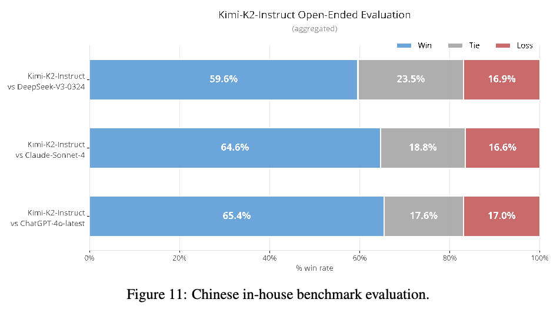
（接上页）比率，即 98.9。在 FaithJudge 的 RAG 任务中，幻觉率为 7.4%，同样为保持表格一致而表示为 92.6。
长上下文能力方面，Kimi-K2-Instruct 在 DROP（93.5%）上超过所有开源和闭源模型，在检索任务 MRCR 上超过 DeepSeek-V3-0324（55.0%，对比 50.8%）。对于长上下文推理任务 FRAMES 和 LongBench v2，Kimi-K2-Instruct（77.1%、49.1%）略落后于 DeepSeek-V3-0324，差距约 2%。
开放式评估。除静态、封闭式基准外，我们还评估模型在更接近现实使用的开放式、细致任务中的表现。
英文场景下，我们使用 Arena-Hard-Auto v2.0 基准，通过 LLM 作为评判者的协议，评估多样开放式提示的生成质量 [43]。这些评估覆盖广泛高难度提示，得到研究社区广泛认可。在 Arena-Hard-Auto v2.0 上，Kimi-K2-Instruct 在困难提示（54.5%）和创意写作任务（85.0%）上都取得最先进胜率，超过所有开源模型，并可与 GPT-4.1 和 Claude Sonnet 等顶尖闭源系统竞争。这些结果凸显模型在多样、无约束设置下处理复杂推理和细致生成的能力。
然而，Arena-Hard-Auto 对中文特定任务的覆盖有限。为填补这一空缺，我们基于真实用户查询开发内部留出基准。为维护评估完整性，该基准数据受到访问限制，从而消除过拟合风险。
如图 11 所示，Kimi-K2-Instruct 在内部中文基准的所有比较中都表现强劲。对 ChatGPT-4o-latest 的胜率为 65.4%，对 Claude Sonnet 4 为 64.6%，对 DeepSeek-V3-0324 为 59.6%。所有比较中的失败率都保持较低，约为 17%，说明 Kimi-K2-Instruct 很少落后。较高胜率和稳定差距展示其在开放式中文任务上的较强能力。
除受控评估外，我们还通过公开人工评估考察现实用户偏好。截至 2025 年 7 月 17 日，基于真实用户超过 3,000 次盲投票，Kimi-K2-Instruct 在 LMSYS Arena 排行榜8上排名开源第一、总体第五。与 LLM 作为评判者的协议不同，该排行榜反映人类对多样用户提交提示的直接偏好，为模型实际性能提供互补视角。
Arena-Hard-Auto、内部基准以及 LMSYS Arena 投票共同提供 Kimi-K2-Instruct 开放式能力的全面视图，表明它在英文和中文的现实用户体验中都是高度受偏好的模型。
QK-Clip 的设计遵循最小干预原则：仅在必要时激活，训练稳定后停用。实验证据和分析一致表明，它对模型质量的影响可忽略。
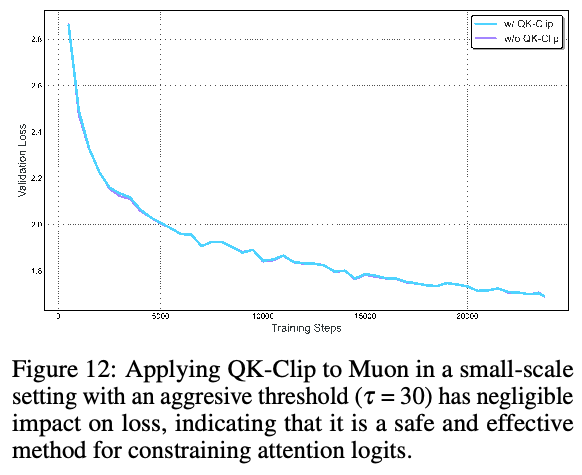
小规模消融。我们训练两个激活参数 0.5B、总参数 3B 的小规模 MoE 模型，一个使用原始 Muon，另一个使用低裁剪阈值 \(\tau = 30\) 的 MuonClip。如图 12 所示，应用 MuonClip 对损失曲线影响可忽略，说明即使强力裁剪也不会损害 MuonClip 的收敛或训练动态。这表明 MuonClip 能安全有效地限制 attention logits，而不降低模型性能。此外，下游任务评估未发现统计显著的性能退化。这些结果共同证明，MuonClip 是限制 attention logits 的安全有效方法，不会损害模型质量。
自动停用。在 Kimi K2 中，QK-Clip 只在短暂阶段激活：
QK-Clip 激活时按头应用，而不是按层应用，以尽量减少对其他头的潜在过度正则化。训练稳定后，QK-Clip 停用，不再产生任何影响。
当 softmax 之前的最大 attention 分数
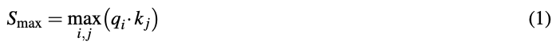
在训练中无界增长时，就会出现 logit 爆炸。由于
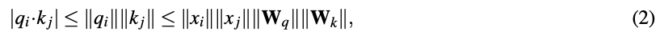
且 RMS-Norm 使 \(\Vert x_{i}\Vert \Vert x_{j}\Vert\) 有界，这一现象主要由 \(W_{q}\) 或 \(W_{k}\) 的谱范数增长驱动。实验中，我们发现 Muon 更容易发生 logit 爆炸。下面给出我们的假设。
更新的结构差异。Muon 通过 msign 运算生成权重更新，因此更新矩阵的所有奇异值相等，其有效秩为满秩。相比之下，Adam 产生的典型更新矩阵具有偏斜谱：少数较大奇异值占主导，有效秩较低。关于 Adam 的这种低秩假设并不新，高阶 muP 也作出相同假设。
该现象已在 16B Moonlight 模型上验证：Muon 训练的权重比 Adam 训练的权重具有更高奇异值熵，即更高有效秩，印证了理论直觉。
SVD 表达。设步骤 \(t - 1\) 的参数矩阵具有以下奇异值分解：
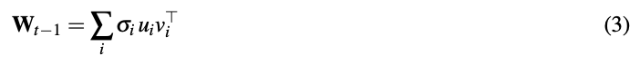
我们将更新矩阵写为
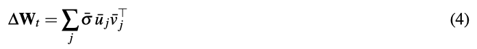
因此，下一次参数更新为
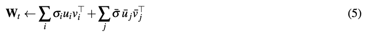
在 Muon 中，由于权重和更新的有效秩都高于 Adam，我们假设奇异向量对 \(u_{i}v^{\top}_{i}\) 与 ū\(_{j}\bar{v}^{\top}_{j}\) 对齐的概率更高。这可能使 \(W_{t}\) 对应的奇异值以相加方式增长。
Attention 特有的放大效应。attention logits 通过以下双线性形式计算：
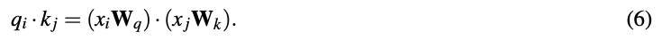
乘积 \(W_{q}W^{\top}_{k}\) 使谱范数平方，因此任一矩阵中奇异值的增长都会被放大。Muon 增大奇异值的倾向因而转化为更高的 logit 爆炸风险。
这一评估框架的潜在副作用之一，是可能偏好显得自信、坚定的响应，即使场景涉及歧义或主观性。这源于当前评分准则的两个关键约束：
（接上页）因此，在更适合保留歧义、细微差别或认识谦逊的领域，模型偶尔可能夸大确定性。未来框架迭代可能纳入对校准后的不确定性更细粒度的处理。
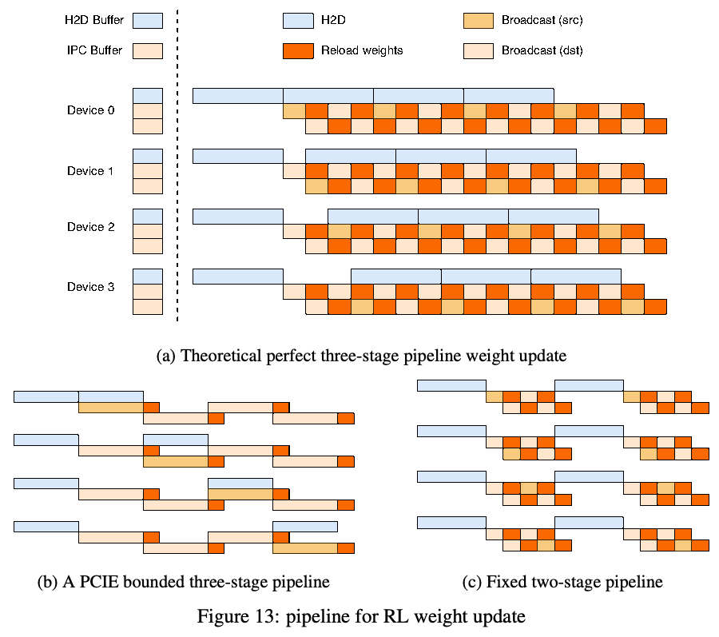
Checkpoint 引擎在每个 GPU 上管理三个大小相等的设备缓冲区：一个 H2D 缓冲区用于加载卸载的模型参数，两个 IPC 缓冲区用于 GPU 间广播。IPC 缓冲区与推理引擎共享，使其直接访问相同物理内存。这三个缓冲区使我们能够将三个步骤安排为流水线。
理论上的三阶段流水线。如图 13a 所示，引入三阶段流水线。（1）H2D：最新权重的一个分片异步复制到 H2D 缓冲区。（2）广播：复制完成后，分片复制到一个 IPC 缓冲区，并广播到所有设备。（3）重新加载：推理引擎同时从另一个 IPC 缓冲区加载参数。
因 PCIe 饱和采用两阶段流水线。在 NVIDIA H800 集群上，并发 H2D 与广播会使共享 PCIe 结构饱和，将三阶段退化为顺序过程（图 13b）。因此，我们采用更简单的两阶段方案（图 13c）：（1）所有设备执行一次同步 H2D 传输；（2）广播和重新加载并行进行。
两阶段流水线会受到多次同步 H2D 复制操作的限制。但在大规模设备场景中，模型会被切分成小分片，整个参数集一次传输即可放入 H2D 缓冲区，这一开销将消失。
通过重叠 H2D、广播和重新加载权重，我们能够获得较高带宽，将权重从训练引擎重新分片到所有推理引擎。